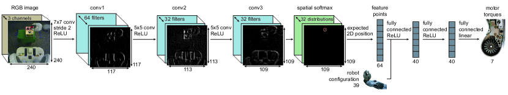
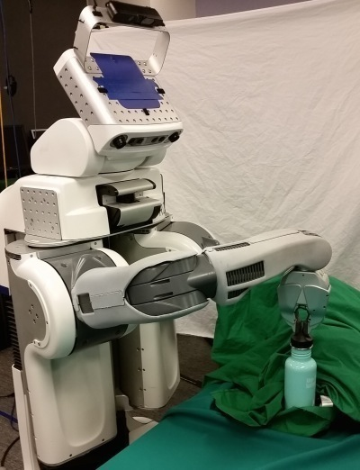

초록
정책 탐색 방법은 로봇이 광범위한 작업에 대한 제어 정책을 학습할 수 있도록 하지만, 실제 정책 탐색을 적용하려면 종종 인지, 상태 추정 및 저수준 제어를 위한 수작업 설계된 구성 요소가 필요하다. 본 논문에서는 다음과 같은 질문에 답하고자 한다. 인지 및 제어 시스템을 종단간(end-to-end)으로 공동 학습시키는 것이 각 구성 요소를 개별적으로 학습시키는 것보다 더 나은 성능을 제공하는가? 이를 위해 우리는 원시 이미지 관측값을 로봇 모터의 토크로 직접 매핑하는 정책을 학습하는 데 사용할 수 있는 방법을 개발한다. 이 정책은 92,000개의 매개변수를 가진 심층 합성곱 신경망(CNN)으로 표현되며, 정책 탐색을 지도 학습으로 변환하는 가이드 정책 탐색(guided policy search) 방법을 사용하여 학습된다. 이때 지도는 단순한 궤적 중심 강화 학습 방법으로 제공된다. 우리는 병에 뚜껑을 돌려 잠그는 것과 같이 시각과 제어 사이의 긴밀한 협응이 필요한 다양한 실제 조작 작업에서 우리 방법을 평가하고, 다양한 기존 정책 탐색 방법과의 시뮬레이션 비교를 제시한다.
주제어: 강화 학습, 최적 제어, 비전, 신경망
1 서론
로봇은 수술 (Lanfranco et al., 2004) 및 가사 노동 (Wyrobek et al., 2008)을 포함하여 인간의 제어 하에 인상적인 작업을 수행할 수 있다. 그러나 자율 작동을 위한 인지 및 제어 소프트웨어를 설계하는 것은 기본적인 작업에 대해서도 여전히 주요한 과제로 남아 있다. 정책 탐색 방법은 로봇이 경험을 통해 새로운 행동을 자동으로 학습할 수 있도록 해준다는 유망함을 지니고 있다 (Kober et al., 2010b; Deisenroth et al., 2011; Kalakrishnan et al., 2011; Deisenroth et al., 2013). 그러나 이러한 방법을 사용하여 학습된 정책은 정책에 보다 다루기 쉽고 저차원적인 관측 및 행동 표현을 제공하기 위해 인지 및 제어를 위한 다수의 수작업 설계된 구성 요소에 의존하는 경우가 많다. 특히 비전 시스템은 복잡하고 오류가 발생하기 쉬우며, 일반적으로 정책 학습 중에 개선되지 않고 작업 목표에 맞게 조정되지도 않는다.
본 논문에서 우리는 다음과 같은 질문에 답하고자 한다. 인지 시스템을 제어 정책과 분리하여 학습시키는 대신 공동으로 학습시킨다면 감각운동 제어를 위한 더 효과적인 정책을 획득할 수 있는가? 인지와 제어를 모두 수행하는 정책을 표현하기 위해 우리는 심층 신경망을 사용한다. 심층 신경망 표현은 최근 컴퓨터 비전, 음성 인식, 심지어 비디오 게임 플레이와 같은 다양한 분야에서 광범위한 성공을 거두었다. 그러나 이미지 픽셀과 관절 각도를 모터 토크로 매핑하는 로봇 컨트롤러와 같은 실제 감각운동 정책에 심층 신경망을 사용하는 것은 몇 가지 독특한 과제를 제시한다. 심층 신경망의 성공적인 적용은 일반적으로 대량의 데이터와 출력에 대한 직접적인 지도에 의존하지만, 로봇 제어에서는 이 두 가지 모두를 사용할 수 없다. 실제 로봇 상호작용 데이터는 부족하며, 작업 완료는 비용 함수를 통해 고수준에서 정의되므로 학습 알고리즘은 각 시점에서 어떤 행동을 취해야 할지 스스로 결정해야 한다. 제어 관점에서 볼 때 또 다른 복잡한 문제는 로봇 센서의 관측값이 시스템의 전체 상태를 제공하지 않는다는 점이다. 대신, 작업 관련 객체의 위치와 같은 중요한 상태 정보는 카메라 이미지와 같은 입력으로부터 추론되어야 한다.
우리는 감각운동 딥러닝을 위한 가이드 정책 탐색 알고리즘과 로봇 제어를 위해 설계된 새로운 CNN 아키텍처를 개발하여 이러한 과제를 해결한다. 가이드 정책 탐색은 효율적인 모델 프리 궤적 최적화 절차를 사용하여 학습 데이터를 반복적으로 구성함으로써 정책 탐색을 지도 학습으로 변환한다. 우리는 이것이 Bregman ADMM (BADMM) (Wang and Banerjee, 2014)의 인스턴스로 공식화될 수 있음을 보여주며, 이를 통해 알고리즘이 국소 최적해로 수렴함을 증명할 수 있다. 우리의 방법에서 시스템의 전체 상태는 학습 시에는 관측 가능하지만 테스트 시에는 관측할 수 없다. 대부분의 작업에서 전체 상태를 제공하는 것은 단순히 학습 중에 각 시도마다 객체를 알려진 여러 위치 중 하나에 배치하는 것만으로 충분하다. 테스트 시에 학습된 CNN 정책은 새롭고 알려지지 않은 구성을 처리할 수 있으며 더 이상 전체 상태 정보를 필요로 하지 않는다. 정책이 지도 학습으로 최적화되므로 학습을 위해 확률적 경사 하강법과 같은 표준 방법을 사용할 수 있다. 우리의 CNN은 92,000개의 매개변수와 7개의 레이어를 가지며, 정확한 공간 추론을 제공하고 과적합을 줄이는 새로운 공간 특징점 변환을 포함한다. 이를 통해 우리는 비교적 적은 양의 데이터와 단 수십 분의 실제 상호작용 시간만으로 정책을 학습할 수 있다.
우리는 PR2 로봇을 사용하여 모양 분류 큐브에 블록 끼우기, 병에 뚜껑 돌려 잠그기, 다양한 그립으로 장난감 망치의 발톱을 못 아래에 맞추기, 옷걸이를 행거에 걸기 등의 정책을 학습함으로써 우리 방법을 평가한다(그림 1 참조). 이러한 작업은 위치 파악, 시각적 추적 및 복잡한 접촉 역학 처리를 요구한다. 우리의 결과는 비전 및 제어 구성 요소를 개별적으로 학습시키는 것과 비교하여 시각운동 정책을 종단간으로 학습시킬 때 일관성과 일반화 능력이 향상됨을 보여준다. 또한 고차원 신경망 정책을 학습할 때 가이드 정책 탐색이 기존의 여러 방법보다 우수한 성능을 보임을 시뮬레이션 비교를 통해 제시한다. 이 논문의 일부 내용은 이전에 두 편의 학술대회 논문 (Levine and Abbeel, 2014; Levine et al., 2015)에 게재된 바 있으며, 본 논문에서는 이를 확장하여 정책에 시각적 입력을 도입한다.
2 관련 연구
강화 학습 및 정책 탐색 방법 (Gullapalli, 1990; Williams, 1992)은 로봇 공학에서 탁구 경기 (Kober et al., 2010b), 물체 조작 (Gullapalli, 1995; Peters and Schaal, 2008; Kober et al., 2010a; Deisenroth et al., 2011; Kalakrishnan et al., 2011), 보행 (Benbrahim and Franklin, 1997; Kohl and Stone, 2004; Tedrake et al., 2004; Geng et al., 2006; Endo et al., 2008) 및 비행 (Ng et al., 2004)과 같은 작업에 적용되어 왔다. 최근의 여러 논문은 로봇 공학에서의 정책 탐색에 대한 서베이를 제공한다 (Deisenroth et al., 2013; Kober et al., 2013). 이러한 방법은 일반적으로 로봇 제어 파이프라인의 한 구성 요소에 적용되며, 이는 종종 PD 컨트롤러와 같이 수작업으로 설계된 컨트롤러 위에서 작동하고 기존 비전 파이프라인 (Kalakrishnan et al., 2011) 등에서 처리된 입력을 받아들인다. 우리의 방법은 시각적 입력과 관절 엔코더 판독값을 로봇 관절의 토크로 직접 매핑하는 정책을 학습한다. 인지에서 제어에 이르는 전체 매핑을 학습함으로써, 인지 레이어는 작업 성능을 최적화하도록 조정될 수 있고 모터 제어 레이어는 불완전한 인지에 적응할 수 있다.
우리는 정책을 합성곱 신경망(CNN)으로 표현한다. CNN은 컴퓨터 비전 및 딥러닝 분야에서 오랜 역사를 가지고 있으며 (Fukushima, 1980; LeCun et al., 1989; Schmidhuber, 2015), 최근 여러 비전 벤치마크에서 우수한 결과를 얻으며 두각을 나타내고 있다 (Ciresan et al., 2011; Krizhevsky et al., 2012; Ciresan et al., 2012; Girshick et al., 2014a; Tompson et al., 2014; LeCun et al., 2015; He et al., 2015). CNN의 대부분의 응용은 분류에 초점을 맞추고 있으며, 불변성을 제공하기 위해 연속적인 풀링 레이어를 통해 위치 정보를 폐기한다 (Lee et al., 2009). 위치 파악에 대한 응용은 일반적으로 슬라이딩 윈도우 (Girshick et al., 2014a) 또는 객체 제안 (Endres and Hoiem, 2010; Uijlings et al., 2013; Girshick et al., 2014b)을 사용하여 객체의 위치를 파악함으로써 작업을 분류로 축소하거나, 수동으로 레이블링된 키포인트의 히트맵에 대한 회귀를 수행하여 (Tompson et al., 2014) 이미지 내 객체 위치와 카메라 캘리브레이션에 대한 정확한 지식을 요구하거나, 3D 모델을 사용하여 이전에 스캔한 객체의 위치를 파악한다 (Pepik et al., 2012; Savarese and Fei-Fei, 2007). 이전의 많은 로봇 공학 분야 CNN 응용은 제어를 직접 고려하지 않고, 더 큰 로봇 시스템의 인지 구성 요소를 위해 CNN을 채택했다 (Hadsell et al., 2009; Sung et al., 2015; Lenz et al., 2015b; Pinto and Gupta, 2015). 우리는 로봇의 엔코더와 카메라 정보 이외의 어떠한 지도 없이도 장면의 공간 정보를 캡처하는 특징점을 자동으로 학습하는 새로운 CNN 아키텍처를 정책에 사용한다.
최근 몇 년 동안 로봇 제어 분야에서의 딥러닝 적용은 시각 인식 분야에 비해 덜 일반적이었다. 역학 및 이미지 형성 과정을 통한 역전파는 종종 미분 불가능하기 때문에 일반적으로 비실용적이며, 이러한 장기 역전파는 서브옵티멀 정책의 선형화가 불안정할 가능성이 높기 때문에 극심한 수치적 불안정성을 초래할 수 있다. 이 문제는 순환 신경망의 관련 맥락에서도 관찰된 바 있다 (Hochreiter et al., 2001; Pascanu and Bengio, 2012). 네트워크의 고차원성 또한 강화 학습을 어렵게 만든다 (Deisenroth et al., 2013). 신경망 제어에 대한 선구적인 초기 연구는 작고 단순한 네트워크를 사용했으며 (Pomerleau, 1989; Hunt et al., 1992; Bekey and Goldberg, 1992; Lewis et al., 1998; Bakker et al., 2003; Mayer et al., 2006), 강화 학습으로 효율적으로 학습할 수 있도록 신중하게 설계된 정책을 사용하는 방법들 (Kober et al., 2013)에 의해 크게 대체되었다. 감각운동 딥러닝에 대한 보다 최근의 연구는 단순한 작업 공간 모션을 다루었으며 (Lenz et al., 2015a; Lampe and Riedmiller, 2013), 비지도 학습을 사용하여 이미지로부터 저차원 상태 공간을 획득했다 (Lange et al., 2012). 이러한 방법들은 저차원의 기저 구조를 가진 작업에서 입증되었다. Lenz et al. (2015a)은 2D 공간에서 말단 장치를 제어하는 반면, Lange et al. (2012)은 1차원 행동으로 2차원 슬롯 카를 제어한다. 우리의 실험은 30-40차원의 상태를 가지며 객체와 상호작용하는 7자유도 로봇 팔의 완전한 토크 제어를 포함한다. 단순한 가상 환경에서 이미지를 통한 제어는 이미지 특징 (Jodogne and Piater, 2007), 비매개변수적 방법 (van Hoof et al., 2015), 비지도 상태 공간 학습 (Böhmer et al., 2013; Jonschkowski and Brock, 2014)으로 다루어졌다. 또한 CNN은 Q-learning, 몬테카를로 트리 탐색 및 확률적 탐색을 통해 비디오 게임을 플레이하도록 학습되었으며 (Mnih et al., 2013; Koutník et al., 2013; Guo et al., 2014), 단순한 시뮬레이션 제어 작업에도 적용되었다 (Watter et al., 2015; Lillicrap et al., 2015). 그러나 이러한 방법들은 실제 세계의 시각적 복잡성이 결여된 가상 영역에서만 입증되었으며, 실제 로봇 학습을 위해 비실용적인 수준의 샘플 수를 요구한다. 우리의 방법은 샘플 효율적이며 단 몇 분의 상호작용 시간만을 필요로 한다. 우리가 아는 한, 이는 직접 토크 제어를 통해 복잡하고 고차원적인 조작 기술을 위한 심층 시각운동 정책을 학습할 수 있는 최초의 방법이다.
실제 로봇에서 시각운동 정책을 학습하려면 복잡한 관측값과 고차원 정책 표현을 처리해야 한다. 우리는 가이드 정책 탐색을 사용하여 이러한 과제를 해결한다. 가이드 정책 탐색에서 정책은 지도 학습을 사용하여 최적화되며, 이는 정책의 차원 수에 따라 유연하게 확장된다. 지도 학습을 위한 학습 세트는 알려진 역학 하에서의 궤적 최적화 (Levine and Koltun, 2013a, b, 2014; Mordatch and Todorov, 2014) 및 알려지지 않은 역학 하에서 작동하는 궤적 중심 강화 학습 방법 (Levine and Abbeel, 2014; Levine et al., 2015)을 사용하여 구성할 수 있으며, 이는 본 연구에서 채택한 접근 방식이다. 두 경우 모두, 최종 정책이 학습 데이터를 재현할 수 있도록 지도가 정책에 맞게 조정된다. 반복적 정책 탐색의 내부 루프에서 지도 학습을 사용하는 것은 모방 학습의 맥락에서도 제안된 바 있다 (Ross et al., 2011, 2013). 그러나 이러한 방법들은 일반적으로 지도가 정책에 어떻게 조정되어야 하는지에 대한 문제를 다루지 않는다.
우리 접근 방식의 목표는 카메라 이미지의 특징점에 대해 피드백 제어를 수행하는 비주얼 서보잉(visual servoing)과도 유사하다 (Espiau et al., 1992; Mohta et al., 2014; Wilson et al., 1996). 그러나 우리의 시각운동 정책은 실제 데이터로부터 완전히 학습되며, 특징점이나 피드백 컨트롤러를 수작업으로 지정할 필요가 없다. 이를 통해 우리의 방법은 시각 신호를 사용하는 방법을 선택하는 데 있어 훨씬 더 많은 유연성을 가질 수 있다. 또한 우리의 접근 방식은 많은 비주얼 서보잉 방법들과 달리 어떠한 종류의 카메라 캘리브레이션도 필요로 하지 않는다(전부는 아니지만, 예: Jägersand et al. (1997); Yoshimi and Allen (1994) 참조).
3 배경 및 개요
이 섹션에서는 시각운동 정책 학습 문제를 정의하고 우리 접근 방식의 개요를 제시한다. 우리 접근 방식의 핵심 구성 요소는 시각운동 정책 학습 문제를 별도의 지도 학습 및 궤적 학습 단계로 분리하는 가이드 정책 탐색 알고리즘이며, 각 단계는 정책을 직접 최적화하는 것보다 쉽다. 또한 비전과 제어의 종단간 학습에 적합한 정책 아키텍처와 우리 방법을 실제 로봇 플랫폼에 적용할 수 있도록 하는 학습 설정에 대해 논의한다.
3.1 정의 및 문제 공식화
정책 탐색(policy search)의 목표는 로봇과 같은 동적 시스템을 제어하기 위해 관측 에 대응하여 에이전트가 행동 을 선택할 수 있도록 하는 정책 을 학습하는 것이다. 이 정책은 으로 매개변수화된 어떤 매개변수 클래스에서 오며, 이는 예를 들어 신경망의 가중치일 수 있다. 시스템은 상태 , 행동 , 관측 으로 정의된다. 예를 들어, 은 로봇의 관절 각도, 세상에 있는 물체의 위치 및 이들의 시간 도함수를 포함할 수 있고, 은 모터 토크 명령으로 구성될 수 있으며, 는 로봇의 온보드 카메라에서 얻은 이미지를 포함할 수 있다. 본 논문에서 우리는 을 가진 유한 시간 지평 에피소드 작업을 다룬다. 상태는 시스템 역학 에 따라 시간의 흐름에 따라 진화하며, 관측은 일반적으로 에 따라 상태의 확률적 결과로 나타난다. 역학과 관측 분포 모두 일반적으로 알려져 있다고 가정하지 않는다. 표기법의 편의를 위해, 상태가 주어졌을 때 정책 하에서의 행동에 대한 분포를 나타내기 위해 을 사용할 것이다. 그러나 정책은 관측 에 조건화되므로, 이 분포는 실제로는 로 주어진다. 역학과 은 함께 궤적 에 대한 분포를 유도한다:
작업의 목표는 비용 함수 으로 주어지며, 정책 탐색의 목적은 기댓값 을 최소화하는 것이고, 이를 로 축약하여 표기할 것이다. 본 논문에서 자주 사용되는 표기법의 요약은 표 1에 제공되어 있다.
| symbol | definition | example/details |
|---|---|---|
| Markovian system state at time step | joint angles, end-effector pose, object positions, and their velocities; dimensionality: 14 to 32 | |
| control or action at time step | joint motor torque commands; dimensionality: 7 (for the PR2 robot) | |
| observation at time step | RGB camera image, joint encoder readings & velocities, end-effector pose; dimensionality: around 200,000 | |
| | trajectory: | notational shorthand for a sequence of states and actions |
| | cost function that defines the goal of the task | distance between an object in the gripper and the target |
| | unknown system dynamics | physics that govern the robot and any objects it interacts with |
| | unknown observation distribution | stochastic process that produces camera images from system state |
| learned nonlinear global policy parameterized by weights | convolutional neural network, such as the one in Figure 2 | |
| | notational shorthand for observation-based policy conditioned on state | |
| learned local time-varying linear-Gaussian controller for initial state | time-varying linear-Gaussian controller has form | |
| trajectory distribution for : | notational shorthand for trajectory distribution induced by a policy |
3.2 접근 방식 요약
우리의 방법은 두 가지 주요 구성 요소로 구성되며, 이는 그림 3에 나와 있다. 첫 번째는 형태의 정책을 학습하는 지도 학습 알고리즘으로, 여기서 와 은 모두 일반적인 비선형 함수이다. 우리의 구현에서 는 심층 합성곱 신경망(deep convolutional neural network)인 반면, 는 관측에 독립적인 학습된 공분산이지만, 다른 표현도 가능하다. 두 번째 구성 요소는 정책을 학습하는 데 사용되는 감독(supervision)을 제공하는 가이드 분포 을 생성하는 궤적 중심 강화 학습(trajectory-centric reinforcement learning, RL) 알고리즘이다. 이 두 구성 요소는 상위 수준의 비용 함수 만을 사용하여 복잡한 로봇 작업을 학습하는 데 사용할 수 있는 정책 탐색 알고리즘을 형성한다. 학습 중에는 실제 시스템에서 롤아웃을 실행하여 가이드 분포 로부터의 샘플만 생성되므로, 실제 하드웨어에서 부분적으로 학습된 신경망 정책을 실행할 필요가 없다.
지도학습은 일반적으로 장기 수평선(long-horizon) 성능이 우수한 정책을 생성하지 못한다. 정책의 작은 실수가 시스템을 훈련 데이터의 분포를 벗어난 상태로 이끌어 오류를 누적시키기 때문이다. 이러한 문제를 피하려면 훈련 데이터가 정책 자체의 상태 분포로부터 제공되어야 한다 (Ross et al., 2011). 본 연구에서는 궤적 중심 강화학습(trajectory-centric RL)과 지도학습을 교대로 수행함으로써 이를 달성한다. 강화학습 단계는 현재 정책 에 적응하며, 정책이 방문하는 상태에 반복적으로 더 가까워지는 상태에서 지도 정보를 제공한다. 이는 제약 조건이 있는 최적화를 위한 BADMM 알고리즘 (Wang and Banerjee, 2014)의 변형으로 공식화되며, 수렴 시 정책 와 가이드 분포 가 동일한 행동을 보임을 보이는 데 사용될 수 있다. 이 알고리즘은 제4절에서 유도된다. 가이드 분포는 정책 매개변수를 직접 학습하는 것(예: 모델 프리 강화학습 사용)보다 최적화하기가 훨씬 더 쉬운데, 그 이유는 가이드 분포가 시스템의 전체 상태 를 사용하는 반면, 정책

시각운동(visuomotor) 작업을 학습할 때, 정책 는 새로운 합성곱 신경망(CNN) 아키텍처로 표현되며, 이에 대해서는 제5.2절에서 설명한다. CNN은 컴퓨터 비전 분야에서 상당한 성공을 거두었으나 (LeCun et al., 2015), 가장 대중적인 아키텍처들은 대규모 데이터셋에 의존하며 분류와 같은 의미론적 작업에 초점을 맞추고 있어 공간 정보를 의도적으로 배제하는 경우가 많다. 그림 2에 제시된 본 연구의 아키텍처는 마지막 합성곱 레이어에서 피드백 제어에 적합한 시각적 장면의 간결한 표현을 형성하는 일련의 공간 특징점(spatial feature points)으로의 고정된 변환을 사용한다. 본 네트워크는 7개의 레이어와 약 92,000개의 매개변수를 가지며, 이는 표준적인 정책 탐색 방법들에 큰 도전 과제가 된다 (Deisenroth et al., 2013).
비주얼모터 정책을 훈련하는 데 필요한 경험의 양을 줄이기 위해, 본 논문에서는 비교적 적은 횟수의 반복으로도 효과적인 정책을 훈련할 수 있는 사전훈련(pretraining) 방식을 제안한다. 사전훈련 단계는 Figure 3에 도식화되어 있다. 이러한 사전훈련의 직관적 배경은, 궁극적으로 시각과 제어를 결합한 센서리모터 정책을 얻고자 하지만 시각의 저수준(low-level) 측면은 독립적으로 초기화할 수 있다는 점에 있다. 이를 위해, 장면 내 물체의 위치와 같이 관측 에 제공되지 않는 의 요소를 예측함으로써 네트워크의 합성곱 레이어(convolutional layers)를 사전훈련한다. 또한, 궤적들이 해당 작업에서 기본적인 수준의 능력을 달성할 때까지 합성곱 네트워크와 독립적으로 가이드 궤적 분포 를 초기에 훈련한 다음, 의 엔드투엔드 훈련을 포함하는 완전한 가이드 정책 탐색(guided policy search)으로 전환한다. 본 구현에서는 첫 번째 레이어 필터를 ImageNet (Deng et al., 2009) 분류 작업으로 훈련된 Szegedy et al. (2014)의 모델로부터 초기화한다. 이러한 초기화 및 사전훈련 방식은 Section 5.2에 기술되어 있다.
4 BADMM을 이용한 가이드 정책 탐색
Guided policy search는 정책 탐색을 지도 학습 문제로 변환하며, 이때 훈련 세트는 단순한 궤적 중심 RL 알고리즘에 의해 생성된다. 이 알고리즘은 선형-가우시안 제어기 를 최적화하며, 제 4.2절에 설명되어 있다. 본 논문에서는 에 의해 유도되는 궤적 분포를 로 지칭한다. 각 는 서로 다른 초기 상태에서 성공적으로 동작한다. 예를 들어, 병에 뚜껑을 씌우는 작업에서 이러한 초기 상태는 병의 다양한 위치에 대응한다. 여러 병 위치에 대한 궤적으로 훈련함으로써, 최종 CNN 정책은 모든 초기 상태에서 성공할 수 있으며, 동일한 분포의 다른 상태로 일반화될 수 있다.
가이드 정책 탐색으로 학습된 최종 정책 에는 전체 상태 의 관측 만 제공되며, 역학은 알려져 있지 않다고 가정한다. 그림 3의 가이드 정책 탐색 상자를 확장한 버전에 해당하는 이 방법의 다이어그램이 오른쪽에 나와 있다. 외측 루프(outer loop)에서는 해당 컨트롤러 를 실행하여 실제 시스템에서 각 초기 상태에 대한 샘플 궤적 를 추출한다. 이 샘플들은 을 개선하는 데 사용되는 역학 을 피팅하는 데 사용되며, 정책의 학습 데이터 역할을 한다. 내측 루프(inner loop)는 각 을 최적화하는 것과 이러한 궤적 분포에 맞추어 정책을 최적화하는 것을 교대로 수행한다. 정책은 전체 상태 이 아닌 관측 으로부터 각 궤적을 따른 행동을 예측하도록 학습된다. 이를 통해 정책은 테스트 시에 원시 관측(raw observations)을 직접 사용할 수 있다. 이 교대 최적화는 BADMM 알고리즘 (Wang and Banerjee, 2014)의 인스턴스로 프레임화될 수 있으며, 이는 궤적 분포와 정책이 동일한 상태 분포를 갖는 솔루션으로 수렴한다. 이를 통해 정책의 탐욕적 지도 학습(greedy supervised training)이 장기 시간 지평에서 좋은 성능을 내는 정책을 생성할 수 있게 된다.
4.1 알고리즘 유도
정책 탐색 방법은 기대 비용 를 최소화한다. 여기서 는 궤적이고,
| (1) |
여기서 을 가이드 분포라고 부를 것이다. 이 공식화는 제약 조건이 두 분포를 동일하게 강제하므로 원래 문제와 동일하다. 그러나 초기 상태 분포 을 샘플 로 근사하면, 나중에 보여주듯이 을 보다 최적화하기 훨씬 쉬운 분포 클래스로 선택할 수 있다. 이를 통해 실제 물리 시스템에서 엄청난 양의 경험을 요구하는 복잡한 신경망 정책 을 강화 학습으로 직접 학습할 필요 없이, 에 대해 간단한 지역 학습(local learning) 방법을 사용할 수 있게 된다.
제약 조건이 있는 문제는 원시 변수(primal variables)에 대해 라그랑지안(Lagrangian)을 최소화하는 것과 라그랑주 승수(Lagrange multipliers)를 하위 경사(subgradient)만큼 증가시키는 것을 교대로 수행하는 쌍대 하강법(dual descent method)으로 해결할 수 있다. 과 에 대한 라그랑지안의 최소화는 교대 방식으로 수행된다. 에 대한 최소화는 지도 학습(이 와 일치하도록 만듦)에 대응하고, 에 대한 최소화는 하나 이상의 궤적 최적화 문제로 구성된다. 우리가 사용하는 쌍대 하강법은 제약 변수 간의 브레그만 발산(Bregman divergence)으로 라그랑지안을 보강하는 ADMM (Boyd et al., 2011)의 변형인 BADMM (Wang and Banerjee, 2014)에 기반한다. 우리는 브레그만 제약 조건으로 KL 발산(KL-divergence)을 사용하며, 이는 확률 분포를 다루는 데 특히 편리하다. 또한 제약 조건 의 양변에 를 곱하여 을 얻도록 수정할 것이다. 이 제약 조건은 동등하지만, 라그랑지안을 기댓값으로 표현할 수 있는 편리한 성질을 갖는다. 따라서 및 에 대한 BADMM 증강 라그랑지안은 다음과 같이 주어진다.
여기서 은 시간 에서의 상태 및 행동 에 대한 라그랑주 승수(Lagrange multiplier)이며, 와 는 KL 발산(KL-divergence)의 기댓값이다.
교대 원쌍대 최소화(alternating primal minimization)를 동반한 쌍대 하강법(dual descent)은 다음 단계들로 기술된다.
이 절차는 BADMM의 한 사례이므로, BADMM의 수렴 보장성을 그대로 상속받는다. 각 줄에서 최적화 변수와 무관한 항들은 생략한다는 점에 유의하라. 매개변수 은 스텝 크기(step size)이다. 대부분의 증강 라그랑주(augmented Lagrangian) 방법과 마찬가지로, 가중치 은 부록 A.1에 기술된 바와 같이 휴리스틱하게 설정된다.
다이내믹스(dynamics)는 에 대한 최적화에만 영향을 미친다. 이 최적화를 효율적으로 만들기 위해, 우리는 각 초기 상태 샘플 에 대해 하나씩 대응되는 개의 가우스 분포(Gaussian) 의 혼합(mixture)으로 을 선택한다. 이로 인해 섹션 4.2에서 논의된 바와 같이 행동 조건부 분포 와 다이내믹스 은 선형 가우스(linear-Gaussian) 형태가 된다. 이는 시스템이 결정론적이거나 노이즈가 가우스 분포를 따르고 작을 때 합리적인 선택이며, 실제 물리 시스템에서 사용하기에 이 방식이 노이즈에 충분히 견고함을 확인했다. 또한 의 선택은 정책 가 조건부 가우스 분포라고 가정한다. 의 평균과 공분산은 관측값 의 임의의 비선형 함수가 될 수 있고, 관측값 자체는 관측되지 않은 상태 의 함수이므로 이 역시 합리적이다. 섹션 4.2에서는 이러한 가정들을 통해 각 를 매우 효율적으로 최적화할 수 있음을 보여준다. 우리는 가 정책이 우수하고 비용이 낮은 행동에 집중하도록 돕는 역할을 하므로, 이를 가이드 분포(guiding distributions)라고 부를 것이다.
을 학습하는 것 외에도, 우리는 무한한 제약 조건 집합 을 다룰 수 있는 방식으로 표현해야 한다. 이전 연구에서 제안된 하나의 근사적 접근법은 정확한 제약 조건을 특징(feature) (Peters et al., 2010)의 기댓값으로 대체하는 것이다. 특징이 확률 변수의 선형, 이차 또는 더 높은 차원의 단항식(monomial) 함수로 구성될 때, 이는 분포의 모멘트(moment)에 대한 제약 조건으로 볼 수 있다. 1차 모멘트만 사용하면 기대 행동에 대한 제약 조건인 을 얻는다. 앞서 가정한 것처럼 다이내믹스의 확률성이 낮다면, 각 에 대한 최적 해는 낮은 엔트로피를 가질 것이므로 이 1차 모멘트 제약 조건은 합리적인 근사가 된다. 증강 라그랑주 내의 KL 발산 항들은 여전히 고차 모멘트 간의 일치를 부드럽게 강제하는 역할을 할 것이다. 이러한 단순화는 꽤 극단적이지만, 실제로는 고차 모멘트를 포함하는 것보다 더 안정적임을 확인했는데, 이는 제한된 수의 샘플로 고차 모멘트를 정확하게 추정하는 것이 더 어렵기 때문인 것으로 보인다. 이제 교대 최적화는 다음과 같이 주어진다.
| (2) | ||||
| (3) | ||||
여기서 은 시간 에서의 기대 행동에 대한 라그랑주 승수이다. 본 논문의 나머지 부분에서는 식 (2)와 (3)의 두 증강 라그랑주를 각각 나타내기 위해 와 을 사용할 것이다. 다음 두 섹션에서는 미지의 다이내믹스 하에서 을 에 대해 최적화하는 방법과, 복잡하고 고차원인 정책에 대해 을 최적화하는 방법을 설명한다. BADMM 최적화의 구현 세부 사항은 부록 A.1에 제시되어 있다.
4.2 미지 다이내믹스 하에서의 궤적 최적화
이전 섹션의 라그랑주 은 의 혼합 성분들로 인수분해되므로, 단일 가우스 분포 에 대한 궤적 최적화 방법을 설명한다. 혼합 성분이 여러 개인 경우, 이 절차는 각 에 대해 병렬로 적용된다. 가 가우스 분포이므로, 다이내믹스와 제어기에 대응하는 조건부 분포 및 은 시간에 따라 변하는 선형 가우스(time-varying linear-Gaussian) 형태이며 다음과 같이 주어진다.
이러한 유형의 제어기는 적은 수의 실제 샘플로도 효율적으로 학습할 수 있어 가이드 분포를 최적화하는 데 좋은 선택이 된다. 각 초기 상태마다 서로 다른 시간 가변 선형 가우스 다이내믹스 세트가 피팅되므로, 이 다이내믹스 표현은 국소적으로 선형화할 수 있는 모든 연속 결정론적 시스템을 모델링할 수 있다. 확률적 다이내믹스는 원칙적으로 국소 선형성 가정을 위배할 수 있지만, 실제로는 이 표현이 노이즈가 존재하는 다양한 실제 환경의 작업에 잘 부합함을 확인했다.
다이내믹스는 환경에 의해 결정된다. 다이내믹스를 알고 있다면, DDP (Jacobson and Mayne, 1970)의 변형인 반복 선형 이차 가우스 레귤레이터(iterative linear-quadratic-Gaussian regulator, iLQG) (Li and Todorov, 2004; Levine and Koltun, 2013a)의 변형을 사용하여 을 최적화할 수 있다. 다이내믹스를 모르는 경우, 이전 반복에서의 궤적 분포(로 표기)로부터 샘플링된 샘플 궤적에 을 피팅할 수 있다. 만약 가 과 너무 다르면, 이 샘플들은 의 좋은 추정치를 제공하지 못해 최적화가 발산할 것이다. 이를 방지하기 위해, 에서 로의 변화를 KL 발산 관점에서 스텝 크기 으로 제한하여 다음과 같은 제약 조건이 있는 문제를 구성할 수 있다.
이러한 유형의 정책 업데이트는 이전에 정책 탐색(policy search) (Bagnell and Schneider, 2003; Peters and Schaal, 2008; Peters et al., 2010; Levine and Abbeel, 2014)의 맥락에서 여러 저자에 의해 제안된 바 있다. 이 가우스 분포인 경우, 이 문제는 쌍대 경사 하강법(dual gradient descent)을 사용하여 효율적으로 해결할 수 있으며, 다이내믹스 는 로봇에서 이전 제어기 을 실행하여 수집한 샘플에 피팅된다. 튜플 에 전역 가우스 혼합 모델(global Gaussian mixture model)을 피팅하고 이를 다이내믹스 피팅을 위한 사전 확률(prior)로 사용하면 샘플 복잡도를 크게 줄일 수 있다. 다이내믹스 피팅 절차는 부록 A.3에 자세히 설명되어 있다.
궤적 최적화 비용 함수 역시 정책 에 의존하는 반면, 우리는 오직 에만 접근할 수 있음에 유의하라. iLQG를 위해 내부의 KL 발산 항 의 국소 이차 전개(local quadratic expansion)를 계산하기 위해, 다이내믹스를 선형화하는 데 사용하는 것과 동일한 절차를 사용하여 상태 에 대한 조건부 가우스 정책 의 평균의 선형화도 추정한다. 이 추정을 위한 데이터는 튜플 로 구성되며, 실제 물리 시스템에서 평가된 모든 샘플에 대해 상태 과 관측값 를 모두 얻을 수 있으므로 이를 획득할 수 있다.
이 제약 조건 최적화는 이전 섹션에서 설명한 최적화의 "내부 루프(inner loop)"에서 수행되며, KL 발산 제약 조건 은 궤적 업데이트에 스텝 크기를 부과한다. 전체 알고리즘은 일반화된 BADMM (Wang and Banerjee, 2014)의 한 사례가 된다. 증강 라그랑주 는 와 무관한 양의 하에서의 기댓값으로 구성된다는 점에 유의하라. 우리는 의 이차 전개를 사용하고 다이내믹스에 사용했던 것과 동일한 방법으로 에 선형 가우스를 피팅함으로써 이 양을 국소적으로 이차식으로 근사할 수 있다. 그런 다음 표준 LQR 역방향 패스(backward pass)를 통해 쌍대 경사 하강법 절차의 원쌍대 최적화(primal optimization)를 해결할 수 있다. 이는 이전 연구 (Levine and Abbeel, 2014; Levine and Koltun, 2014)에서 채택된 순방향-역방향 동적 계획법(forward-backward dynamic programming) 절차보다 훨씬 간단하고 빠르다. 이러한 개선은 BADMM을 사용하여 라그랑주 내의 KL 발산 항을 항상 최적화 대상 분포가 첫 번째 인자가 되도록 공식화할 수 있기 때문에 가능하다. KL 발산은 첫 번째 인자에 대해 볼록(convex)하므로, 이에 대응하는 최적화가 훨씬 쉬워진다. 이 LQR 기반 쌍대 경사 하강법 알고리즘의 세부 사항은 부록 A.4에 유도되어 있다.
여러 궤적 의 샘플을 사용하여 공유 다이내믹스 을 피팅하는 동시에 제어기 는 다르게 허용함으로써 이 방법의 효율성을 더욱 향상시킬 수 있다. 이는 이 궤적들의 초기 상태가 유사하여 유사한 영역을 방문할 때 타당하다. 이를 통해 각 반복에서 각 으로부터 단 하나의 샘플만 추출할 수 있으므로, 훨씬 더 많은 초기 상태를 처리할 수 있게 된다.
4.3 지도 정책 최적화
정책 매개변수 은 식 (1)의 최적화 문제에서 제약 조건에만 관여하므로, 정책을 최적화하는 것은 정책과 궤적 분포 사이의 KL 발산 및 의 기댓값을 최소화하는 것에 대응한다. 형태의 조건부 가우스 정책에 대한 목적 함수는 다음과 같다.
여기서 은 의 평균이고 는 공분산이며, 기댓값은 대응하는 관측값 를 가진 각 의 샘플을 사용하여 평가된다. 관측값은 실제 시스템에서 카메라 이미지를 기록하여 로부터 샘플링된다. 과 의 입력은 상태 이 아니라 오직 관측값 이므로, 원시 관측값(raw observations)을 직접 사용하도록 정책을 학습시킬 수 있다. 은 단순히 정책 평균과 궤적 분포의 평균 행동 간의 차이에 라그랑주 승수만큼 오프셋을 적용한 가중 이차 손실(weighted quadratic loss)임에 유의하라. 가중치는 궤적 분포에서 조건부의 정밀도 행렬(precision matrix)이며, 이는 해당 비용 대 비용 함수(cost-to-go function) (Levine and Koltun, 2013a)의 곡률과 같다. 이는 직관적인 해석을 제공한다. 즉, 는 궤적 분포로부터의 이탈에 대해 벌점을 부과하며, 이 벌점은 국소적으로 해당 비용 대 비용에 비례한다. 수렴 시 정책 이 와 동일한 행동을 취할 때 이들의 Q-함수는 같아지며, 지도 정책 목적 함수는 정책 반복(policy iteration) 목적 함수 (Levine and Koltun, 2014)와 동일해진다.
본 연구에서는 신경망 학습의 표준 방법인 확률적 경사 하강법(SGD)을 사용하여 에 대해 을 최적화한다. 가우스 정책의 공분산은 우리 구현에서 관측값에 의존하지 않지만, 이러한 의존성을 추가하는 것은 간단하다. 복잡한 신경망을 학습시키려면 상당한 수의 샘플이 필요하므로, 이전 반복에서 샘플링된 관측값을 정책 최적화에 포함하고 현재 궤적 분포를 사용하여 해당 상태에서의 행동 를 평가하는 것이 유익함을 확인했다. 이 샘플들은 잘못된 상태 분포에서 오므로, 중요도 샘플링(importance sampling)을 사용하여 현재 분포 과 샘플링된 원래 분포 하에서의 확률 비율에 따라 가중치를 부여하며, 이는 추정된 선형 가우스 다이내믹스 (Levine and Koltun, 2013b) 하에서 쉽게 평가할 수 있다.
4.4 이전 가이드 정책 탐색 방법과의 비교
우리는 정책은 관측값에 대해 훈련되는 반면, 궤적은 전체 상태에 대해 훈련되는 가이드 정책 탐색(guided policy search) 방법을 제시했다. 제약 조건 최적화에 기반한 여러 이전 가이드 정책 탐색 방법들이 제안된 바 있지만, 가이드 정책 탐색의 BADMM 공식화는 본 연구에서 처음으로 선보이는 것이다. Levine and Koltun (2014)은 식 1과 유사하지만 와 사이의 KL-발산(KL-divergence)에 제약 조건을 두는 공식화를 제안했다. 이는 더 복잡하고 비볼록(non-convex)한 순방향-역방향 궤적 최적화 단계를 야기한다. BADMM 공식화는 궤적 최적화 단계 동안 볼록(convex) 문제를 해결하므로, 특히 궤적의 수 가 클 때 구현 및 사용이 실질적으로 훨씬 빠르고 쉽다.
가이드 정책 탐색을 위한 ADMM의 사용은 알려진 다이내믹스 하에서 결정론적 정책(deterministic policies)을 위해 Mordatch and Todorov (2014)에 의해서도 제안된 바 있다. 이 접근법은 알려진 결정론적 다이내믹스를 요구하며 결정론적 정책을 훈련한다. 나아가, 이 접근법은 단순한 이차 증강 라그랑주(quadratic augmented Lagrangian) 항을 사용하기 때문에, 국소적 피드백을 고려하기 위해 정책의 그래디언트에 패널티 항을 추가로 요구한다. 우리의 접근법은 KL-발산 항에 포함된 고차 모멘트(higher moments) 덕분에 이러한 피드백 동작을 강제하지만, 정책의 2차 도함수를 계산할 필요는 없다.
5 종단간 시각운동 정책
가이드 정책 탐색을 사용하면 정책의 입력이 로봇의 온보드 카메라 이미지로 구성되는 경우와 같이, 가공되지 않은 관측값(raw observations)을 사용하여 복잡한 고차원 정책을 최적화할 수 있다. 그러나 이러한 능력을 활용하여 시각운동 제어(visuomotor control)를 위한 정책을 직접 학습하려면, 데이터 효율적이면서 가공되지 않은 시각적 입력으로부터 직접 복잡한 제어 전략을 학습할 수 있는 정책 표현을 설계해야 한다. 본 섹션에서는 이 작업에 독보적으로 적합한 심층 합성곱 신경망(CNN) 모델을 설명한다. 우리의 접근법은 새로운 공간적 소프트-아그맥스(spatial soft-argmax) 레이어와 유연성 및 데이터 효율성을 제공하는 사전 훈련(pretraining) 절차를 결합한다.
5.1 시각운동 정책 아키텍처
우리의 시각운동 정책은 로봇에서 20 Hz로 실행되며, 단안 RGB 이미지와 로봇 구성을 7자유도(DoF) 로봇 팔의 관절 토크로 매핑한다. 구성에는 관절의 각도와 말단 장치(end-effector)의 포즈(말단 장치 공간의 3개 점으로 정의됨) 및 이들의 속도가 포함되지만, 이미지로부터 결정되어야 하는 대상 물체나 목표의 위치는 포함되지 않는다. CNN은 객체 분류 (Lee et al., 2009)와 같은 작업에서는 위치 정보가 무관한 방해 요소이기 때문에, 위치를 결정하는 데 필요한 위치 정보를 버리기 위해 풀링(pooling)을 사용하는 경우가 많다. 제어에는 위치 정보가 중요하기 때문에 우리의 정책은 풀링을 사용하지 않는다. 또한, 인간 포즈 추정과 같은 공간적 작업을 위해 구축된 CNN은 이미지 공간에서의 위치 라벨(예: 수동으로 라벨링된 키포인트 (Tompson et al., 2014))의 가용성에 의존하는 경우가 많다. 우리는 이미지 공간에서의 직접적인 지도 없이도 이미지로부터 공간 정보를 추정할 수 있는 새로운 CNN 아키텍처를 제안한다. 섹션 5.2에서 논의되는 우리의 포즈 추정 실험은 이 네트워크가 카메라 보정 없이 로봇이 제공하는 3D 위치 정보만을 사용하여 유용한 시각적 특징을 학습할 수 있음을 보여준다. 가이드 정책 탐색을 통해 모터 토크를 직접 출력하도록 네트워크를 추가로 훈련하면 작업 특화된(task-specific) 시각적 특징을 획득하게 된다. 섹션 6.4에서의 실험은 이것이 포즈 추정만을 위해 훈련된 특징으로 달성한 수준 이상으로 성능을 향상시킴을 보여준다.
우리의 네트워크 아키텍처는 그림 2에 나와 있다. 네트워크의 시각 처리 레이어는 3개의 합성곱 레이어로 구성되며, 각 레이어는 입력의 모든 픽셀을 중심으로 하는 패치에 적용되는 필터 뱅크를 학습한다. 이 필터들은 국소 이미지 특징의 계층 구조를 형성한다. 각 합성곱 레이어 뒤에는 각 채널 와 각 픽셀 좌표 에 대해 형태의 정류 비선형성(rectifying nonlinearity)이 이어진다. 세 번째 합성곱 레이어는 해상도 를 갖는 개의 반응 맵(response maps)을 포함한다. 이 반응 맵들은 형태의 공간적 소프트맥스(spatial softmax) 함수를 통과한다. 소프트맥스의 각 출력 채널은 이미지 내 특징의 위치에 대한 확률 분포이다. 이 분포로부터 좌표 표현 로 변환하기 위해, 네트워크는 각 특징의 예상 이미지 위치를 계산하여 각 채널에 대한 2D 좌표 및 를 산출한다. 여기서 은 반응 맵에서 점 의 이미지 공간 위치이다. 이것은 선형 연산이므로, 가중치 및 을 갖는 고정된 희소 완전 연결 레이어(sparse fully connected layer)에 대응한다. 공간적 소프트맥스와 기댓값 연산자의 조합은 일종의 소프트-아그맥스(soft-argmax)를 구현한다. 공간적 특징점 는 로봇의 구성과 결합되어 각각 40개의 정류 유닛(rectified units)을 가진 두 개의 완전 연결 레이어에 입력된 후, 토크로의 선형 연결로 이어진다. 전체 네트워크는 약 92,000개의 매개변수를 포함하며, 이 중 86,000개는 합성곱 레이어에 있다.
공간적 소프트맥스와 예상 위치 계산은 합성곱 레이어의 픽셀 단위 표현을 공간 좌표 표현으로 변환하는 역할을 하며, 이는 완전 연결 레이어에 의해 3D 위치나 모터 토크로 조작될 수 있다. 또한 소프트맥스는 측면 억제(lateral inhibition)를 제공하여 낮고 잘못된 활성화를 억제하고, 정확할 가능성이 더 높은 강한 활성화만 유지한다. 이는 우리의 정책을 방해 요소에 더 견고하게 만들어 새로운 시각적 변화에 대한 일반화 능력을 제공한다. 섹션 6.3에서 우리의 아키텍처를 더 표준적인 대안들과 비교하고, 섹션 6.4에서 시각적 방해 요소에 대한 견고성을 평가한다. 그러나 제안된 아키텍처는 더 일반적인 표준 합성곱 네트워크와 대조적으로, 어떤 면에서는 시각운동 제어에 더 특화되어 있다. 예를 들어, 모든 인지 작업이 일련의 공간적 위치로 일관되게 요약될 수 있는 정보를 요구하는 것은 아니다.
5.2 시각운동 정책 훈련

최종 정책은 관측값만 사용하지만, 가이드 정책 탐색 궤적 최적화 단계는 시스템의 전체 상태를 사용한다. 이러한 방식의 계측된 훈련(instrumented training)은 로봇이 통제된 환경에서 훈련되지만 통제되지 않은 실제 환경에서 지능적으로 행동해야 하는 많은 로봇 공학 작업에 자연스러운 선택이다. 우리의 작업에서 관측되지 않는 변수는 대상 물체의 포즈(예: 캡을 씌워야 하는 병)이다. 훈련 동안 이 대상 물체는 일반적으로 오른쪽 그림에 표시된 것처럼 로봇의 왼쪽 그리퍼에 고정되어 있고, 로봇의 오른쪽 팔이 작업을 수행한다. 이를 통해 로봇은 알려진 범위의 위치를 통해 대상을 이동할 수 있다. 최종 시각운동 정책은 이 위치를 입력으로 받지 않고, 대신 카메라 이미지를 사용해야 한다. 적은 양의 훈련 데이터로 인해 작업 관련 변수와 상관관계가 있는 방해 요소는 일반화를 저해할 수 있다. 이러한 이유로, 정책이 왼쪽 팔의 외관을 물체의 위치와 연관시키는 것을 방지하기 위해 왼쪽 팔을 천으로 덮는다.
시각운동 정책을 완전히 처음부터 훈련할 수도 있지만, 그렇게 하면 알고리즘은 정책에 통합되기 전에 자체적으로 더 효율적으로 학습할 수 있는 기본적인 시각적 특징과 팔의 움직임을 학습하는 데 수많은 반복(iterations)을 소비하게 된다. 학습 속도를 높이기 위해, 우리는 완전히 관측된 훈련 설정을 활용하여 정책의 시각 레이어와 가이드 정책 탐색을 위한 궤적 분포를 모두 초기화한다. 시각 레이어를 초기화하기 위해, 로봇은 무작위 위치 범위로 대상 물체를 이동시키며 카메라 이미지와 그리퍼의 포즈로부터 자동으로 계산되는 물체의 포즈를 기록한다. 이 데이터셋은 정책과 동일한 시각 레이어로 구성되고 대상을 정의하는 3D 점을 출력하는 완전 연결 레이어가 뒤따르는 포즈 회귀 CNN을 훈련하는 데 사용된다. 훈련 세트가 여전히 작기 때문에(무작위 팔 움직임에서 수집된 1000개의 이미지를 사용함), 첫 번째 레이어의 필터를 ImageNet (Deng et al., 2009) 분류로 훈련된 Szegedy et al. (2014)의 모델 가중치로 초기화한다. 포즈 회귀에 대한 훈련 후, 합성곱 레이어의 가중치는 정책 CNN으로 전송된다. 이를 통해 로봇은 행동을 학습하기 전에 물체의 외관을 학습할 수 있다.
각 초기 상태에 대한 선형-가우시안 컨트롤러를 초기화하기 위해, 시각운동 정책을 최적화하지 않고 가이드 정책 탐색을 15회 반복한다. 이는 궤적이 아직 성공적이지 않고 전체 시각운동 정책을 최적화하는 것이 불필요하게 시간 소모적인 초기 반복 단계에서 훨씬 빠른 훈련을 가능하게 한다. 우리는 궤적들이 각 대상 위치에 대해 호환 가능한 전략에 도달하기를 원하므로, 이 반복 동안 시각운동 정책을 전체 상태를 입력받는 작은 네트워크로 대체한다. 이 네트워크는 우리 실험에서 40개의 정류 선형 숨겨진 유닛(rectified linear hidden units)을 가진 두 개의 레이어로 구성되었다. 이 네트워크는 오직 궤적을 제약하고 유사한 초기 상태에 대해 발산하는 행동이 나타나는 것을 방지하는 역할만 하며, 그렇지 않으면 후속 정책 학습이 어려워질 수 있다.
초기화 후, 우리는 가이드 정책 탐색으로 전체 시각운동 정책을 훈련한다. 지도 정책 최적화 단계 동안, 완전 연결된 모터 제어 레이어들은 사전 훈련으로 초기화되지 않기 때문에 먼저 자체적으로 최적화된다. 이 레이어들은 크기가 작기 때문에 매우 빠르게 수행될 수 있다. 그런 다음 전체 네트워크가 종단간으로 추가 최적화된다. 종단간 최적화 전에 상위 레이어를 먼저 훈련하는 것이, 훈련되지 않은 상위 레이어로 인한 에러 신호가 매우 클 때 사전 훈련 중에 학습한 유용한 특징들을 합성곱 레이어가 망각하는 것을 방지한다는 것을 발견했다. 전체 사전 훈련 방식은 오른쪽 도표에 요약되어 있다. 궤적은 물리적 시스템에 대한 액세스를 요구하지 않는 시각 레이어 사전 훈련과 병렬로 사전 훈련될 수 있음에 주목하라. 또한, 전체 초기화 절차는 로봇으로부터 이미 얻을 수 있는 정보 외에 어떠한 추가 정보도 사용하지 않는다.
6 실험적 평가
본 섹션에서는 우리의 접근법을 평가하고 다음 질문들에 답하기 위한 일련의 실험을 제시한다:
-
1.
신경망과 같이 복잡한 고차원 정책을 훈련하는 데 있어 가이드 정책 탐색 알고리즘은 다른 정책 탐색 방법들과 비교하여 어떠한가?
-
2.
우리의 궤적 최적화 알고리즘이 다이내믹스를 알 수 없는 실제 로봇 플랫폼에서 다양한 작업에 대해 작동하는가?
-
3.
우리의 공간 소프트맥스(spatial softmax) 아키텍처는 다른 일반적인 합성곱 신경망(convolutional neural network) 아키텍처와 비교했을 때 어떠한가?
-
4.
시각운동 정책(visuomotor policy) 내의 인지 시스템과 제어 시스템을 종단간(end-to-end)으로 공동 학습시키는 것이 각 구성 요소를 개별적으로 학습시키는 것보다 더 나은 성능을 제공하는가?
실제 로봇에서 광범위한 정책 탐색(policy search) 알고리즘을 평가하는 것은 매우 많은 시간이 소요되며, 특히 대량의 샘플을 요구하는 방법들의 경우 더욱 그러하다. 따라서 우리는 물리 시뮬레이터와 시각을 사용하지 않는 더 단순한 정책을 사용하여 질문 (1)에 답한다. 이는 또한 조작(manipulation), 보행(walking), 수영(swimming)을 포함하는 작업에서 가이드된 정책 탐색(guided policy search)의 일반성을 테스트할 수 있게 해준다. 질문 (2)에 답하기 위해, 우리는 PR2 로봇에 대한 광범위한 실험을 제시한다. 이 실험들을 통해 우리의 궤적 최적화(trajectory optimization) 알고리즘의 샘플 효율성을 평가할 수 있다. 질문 (3)을 해결하기 위해, 대상 물체(도형 맞추기 상자 작업에서의 큐브)의 위치를 파악하는 작업에서 다양한 정책 아키텍처를 비교한다. 대상 물체의 위치 파악은 도형 맞추기 상자 작업을 완료하기 위한 전제 조건이므로, 이는 다양한 아키텍처를 평가하기 위한 좋은 대리 지표 역할을 한다. 마지막으로, 옷걸이를 행거에 걸기, 블록을 도형 맞추기 상자에 삽입하기, 다양한 그립으로 장난감 망치의 발톱을 못 아래에 맞추기, 병뚜껑 돌려 잠그기 등의 작업을 위한 시각운동 정책을 학습시킴으로써 가장 중요하고 마지막 질문인 (4)에 답한다. 이러한 작업들은 그림 8에 나와 있다.
6.1 기존 정책 탐색 방법들과의 시뮬레이션 비교
본 섹션에서는 다양한 시뮬레이션 로봇 제어 작업에서 우리의 방법을 기존 정책 탐색 기법들과 비교한다. 이 결과들은 이전에 국소 선형 모델을 이용한 궤적 최적화 절차를 소개한 학회 논문 (Levine and Abbeel, 2014)에 게재된 바 있다. 이러한 작업에서 상태 는 각 로봇의 관절 각도와 속도로 구성되며, 행동 은 각 관절의 토크로 구성된다. 신경망 정책은 하나의 은닉층과 형태의 소프트 정류기(soft rectifier) 비선형성을 사용했다. 이러한 정책들은 상태를 입력으로 사용하기 때문에 매개변수가 수백 개에 불과하여, 우리의 시각운동 정책보다 훨씬 적다. 그러나 이 정도의 매개변수 수조차도 기존 정책 탐색 방법들(Deisenroth et al., 2013)에게는 큰 도전 과제가 될 수 있다.
실험 작업.
우리는 2D 및 3D 페그 삽입(peg insertion), 문어 팔 제어, 평면 수영 및 보행을 시뮬레이션했다. 페그 삽입 작업의 어려움은 페그를 구멍에 정렬해야 하는 필요성과 페그와 벽 사이의 복잡한 접촉으로 인해 불연속적인 역학(dynamics)이 발생한다는 점에서 기인한다. 문어 팔 제어는 유연한 팔의 끝단을 목표 위치 (Engel et al., 2005)로 이동시키는 것을 포함한다. 이 작업의 어려움은 높은 차원성에서 기인하는데, 팔은 자유도를 가지며 이는 차원의 상태 공간에 대응한다. 수영 작업은 3링크 뱀을 제어해야 하고, 보행 작업은 7링크 이족 보행 로봇이 목표 속도를 유지하도록 요구한다. 이러한 작업들의 어려움은 과소작동(underactuation)에서 비롯된다. 각 작업의 시뮬레이션 및 비용에 대한 세부 사항은 부록 B.1에 나와 있다.
기존 방법들.
우리는 REPS (Peters et al., 2010), 보상 가중 회귀(reward-weighted regression, RWR) (Peters and Schaal, 2007; Kober and Peters, 2009), 교차 엔트로피 방법(cross-entropy method, CEM) (Rubinstein and Kroese, 2004), 그리고 PILCO (Deisenroth and Rasmussen, 2011)와 비교한다. 또한 알려진 모델을 사용하는 iLQG (Li and Todorov, 2004)를 기준선(baseline)으로 사용하며, 이는 모든 그래프에서 검은색 수평선으로 표시된다. REPS는 우리의 접근 방식과 마찬가지로 새로운 정책과 이전 정책 간의 KL-발산(KL-divergence) 제약 조건을 강제하는 모델 프리(model-free) 방법이다. 우리는 500개의 유사 샘플(pseudo-samples)을 생성하기 위해 선형 역학을 피팅하는 REPS의 변형 (Lioutikov et al., 2014)과도 비교하며, 이를 "REPS (20 + 500)"으로 표기한다. RWR은 보상의 지수에 가중치를 둔 이전 샘플들에 정책을 피팅하는 EM 알고리즘이며, CEM은 각 배치의 최적 샘플들에 정책을 피팅한다. 가우시안 궤적을 사용할 때 CEM과 RWR은 가중치에서만 차이가 난다. 이러한 방법들은 PoWER 및 PI2 (Kober and Peters, 2009; Theodorou et al., 2010; Stulp and Sigaud, 2012)를 포함하여 가중치가 부여된 샘플에 정책을 피팅하는 강화학습(RL) 알고리즘 부류를 나타낸다. PILCO는 가우시안 프로세스(Gaussian process)를 사용하여 정책 최적화에 사용되는 전역 역학 모델을 학습하는 모델 기반(model-based) 방법이다. 우리는 저자들이 제공한 PILCO의 오픈소스 구현을 사용했다. REPS와 PILCO는 매 반복마다 대규모 비선형 최적화를 해결해야 하는 반면, 우리의 방법은 그렇지 않다. 우리의 방법은 가우시안 혼합 모델(Gaussian mixture model, GMM) 사전 확률을 적용하여 개의 롤아웃(rollout)을 사용했고, 적용하지 않고 개를 사용했다. 계산 비용 때문에 PILCO에는 반복당 개의 롤아웃이 제공된 반면, 다른 기존 방법들은 개 및 개를 사용했다. 자유 하이퍼파라미터가 있는 모든 기존 방법(예: CEM의 엘리트 비율)에 대해 하이퍼파라미터 탐색을 수행하고 비교를 위해 가장 성공적인 설정을 선택했다.
가우시안 궤적 분포.
첫 번째 비교 세트에서는 미지의 역학 하에서 선형-가우시안 제어기를 학습시키기 위한 궤적 최적화 절차만을 평가하여, 이 방법의 샘플 효율성과 복잡한 고차원 문제에 대한 적용 가능성을 확인한다. 페그 삽입, 문어 팔, 수영 작업에 대한 이 비교 결과는 그림 4에 나와 있다. 가로축은 총 샘플 수를 나타내고, 세로축은 페그 끝과 구멍 바닥 사이의 최소 거리, 문어 팔의 목표물까지의 거리, 또는 수영 로봇이 이동한 총 거리를 나타낸다. 페그의 길이가 단위이므로, 이 값 이상의 거리는 삽입을 수행하지 못하는 제어기에 해당한다. 우리의 방법은 특히 가우시안 혼합 모델 사전 확률을 사용할 때 더 적은 샘플로 훨씬 더 효과적인 제어기를 학습했다. 3D 삽입에서 우리의 방법은 알려진 모델을 사용한 iLQG 기준선보다 우수한 성능을 보였다. 접촉 불연속성은 iLQG와 같은 미분 기반 방법뿐만 아니라 부드러운 전역 역학 모델을 학습하는 PILCO와 같은 방법에도 문제를 일으킨다. 우리는 더 많은 세부 정보를 보존하는 시변 국소 모델(time-varying local model)을 사용하며, 샘플에 모델을 피팅하는 것은 불연속성 문제를 완화하는 평활화 효과를 갖는다. 기존의 정책 탐색 방법들은 구멍 위치까지 서보 제어(servo)할 수는 있었으나 페그를 삽입하지는 못했다. 문어 팔 작업에서 우리의 방법은 상태 및 행동 공간의 높은 차원성에도 불구하고 성공했다.111문어 팔의 높은 차원성으로 인해 PILCO를 실행하기 어려웠으나, 원칙적으로 팔의 부드러운 역학을 고려할 때 이러한 방법들이 이 작업에서 잘 작동해야 한다. 또한 우리의 방법은 수영 보행 패턴을 성공적으로 학습한 반면, 기존의 모델 프리 방법들은 전진 운동을 시작하지 못했다. PILCO 역시 이 작업의 부드러운 역학 덕분에 효과적인 보행 패턴을 학습했으나, GP 기반 최적화는 우리의 방법보다 수십 배 더 많은 계산 시간을 필요로 하여 반복당 약 50분이 소요되었다. 기존 모델 프리 방법들의 경우, 시변 선형-가우시안 제어기의 높은 차원성이 상당한 어려움을 초래했을 가능성이 높은 반면(Deisenroth et al., 2013), 우리의 접근 방식은 효율적인 학습을 위해 선형-가우시안 제어기의 구조를 활용한다.
신경망 정책.
그림 5에 표시된 두 번째 비교 세트에서는 페그 삽입 및 이동 작업에 대한 고차원 신경망 정책을 학습시키는 까다로운 작업에서 가이드된 정책 탐색을 RWR 및 CEM222PILCO는 신경망 정책을 최적화할 수 없으며, REPS로는 합리적인 결과를 얻을 수 없었다. 기존의 REPS 적용 사례들은 일반적으로 더 단순하고 차원이 낮은 정책 클래스(Peters et al., 2010; Lioutikov et al., 2014)에 집중되어 있다.과 비교한다. 이 비교에 사용된 가이드된 정책 탐색의 변형은 BADMM 대신 더 단순한 쌍대 경사 하강법(dual gradient descent) 공식을 사용했다는 점에서 섹션 4에서 설명한 버전과 다소 차이가 있다. 실제로는 이 방법들의 성능이 매우 유사함을 확인했으나, BADMM 변형이 실질적으로 더 빠르고 구현하기 쉬웠다.
수영 작업에서 우리의 방법은 선형-가우시안 케이스와 유사한 성능을 달성했으나, 신경망 정책이 고정(stationary)되어 있었기 때문에 결과적인 보행 패턴이 훨씬 더 부드러웠다. 이전 방법들은 반복당 개의 샘플을 사용해야만 이 작업을 해결할 수 있었으며, RWR은 결국 4000개의 샘플 후에 0.5m의 거리를 얻었고, CEM은 3000개의 샘플 후에 2.1m에 도달했다. 우리의 방법은 훨씬 더 적은 샘플로 이러한 거리에 도달할 수 있었다. 이전 연구(Levine and Koltun, 2013a)를 따라 보행 로봇의 궤적은 데모로부터 초기화되었으며, 이는 단순한 선형 피드백으로 안정화되었다. 공정한 비교를 위해 RWR 및 CEM 정책은 이 제어기의 샘플로 초기화되었다. 그래프는 넘어지지 않은 롤아웃에서 이동한 평균 거리를 보여주며, 오직 우리의 방법만이 일관되게 성공하는 보행 정책을 학습할 수 있었음을 보여준다.
페그 삽입 작업에서 신경망은 구멍의 정확한 위치 정보 없이 페그를 삽입하도록 학습되었으며, 이는 부분 관측 문제(partially observed problem)를 야기한다. 구멍은 2D에서는 반경 0.2 단위, 3D에서는 반경 0.1 단위의 영역에 배치되었다. 정책은 4개의 서로 다른 구멍 위치에서 학습된 후, 일반화 성능을 평가하기 위해 4개의 새로운 구멍 위치에서 테스트되었다. 구멍 위치는 신경망에 제공되지 않았으므로, 정책은 관절 각도와 속도만을 입력으로 사용하여 구멍을 탐색해야 했다. 오직 우리의 방법만이 학습 및 테스트 구멍 모두의 위치를 성공적으로 찾아내는 전략을 획득할 수 있었으나, RWR도 결국 2D에서 4개의 구멍 중 하나에 페그를 삽입할 수 있었다.
이러한 비교는 제한된 수의 샘플로 연속 제어 작업을 위한 중간 크기의 신경망 정책조차 학습시키는 것이 많은 기존 정책 탐색 알고리즘에게 매우 어렵다는 것을 보여준다. 실제로 모델 프리 정책 탐색 방법은 매개변수가 100개 이상인 정책에서 어려움을 겪는 것으로 일반적으로 알려져 있다 (Deisenroth et al., 2013). 후속 섹션에서는 실제 로봇 작업에서 우리의 방법을 평가하여, 이러한 시뮬레이션 작업에서부터 시각운동 제어의 종단간 학습에 이르기까지 어떻게 확장될 수 있는지 보여줄 것이다.
6.2 PR2 로봇에서의 선형 가우시안 제어기 학습
본 섹션에서는 실제 PR2 로봇에서 제안하는 궤적 최적화 알고리즘을 사용하여 학습할 수 있는 다양한 조작 작업들을 보여준다. 이 실험들은 이전에 유도 정책 탐색(guided policy search)에 관한 학회 논문 (Levine et al., 2015)에 게재된 바 있다. 유도 정책 탐색이 효과적인 시각운동 정책을 학습하기 위해서는 궤적 최적화를 수행하는 것이 필수적이므로, 제안하는 궤적 최적화가 동역학을 모르는 상태에서 다양한 로봇 조작 작업을 학습할 수 있는지 평가하는 것이 중요하다. 이 실험들의 작업들은 그림 6에 나타나 있으며, 그림 7는 각 작업에 대한 학습 곡선을 보여준다. 본 논문의 모든 로봇 실험에서 작업들은 완전히 처음부터(scratch) 학습되었으며,
제어기의 초기화 는 부록 B.2에 기술되어 있다. 각 제어기를 학습하는 데 필요한 샘플 수는 약 20-25개로, 기존 문헌의 많은 정책 탐색 방법들 (Peters and Schaal, 2008; Kober et al., 2010b; Theodorou et al., 2010; Deisenroth et al., 2013)보다 실질적으로 훨씬 적다. 총 학습 시간은 각 작업당 약 10분이었으며, 이 중 시스템과의 상호작용이 포함된 시간은 3-4분에 불과했다. 나머지 시간은 로봇을 초기 상태로 재설정하고 계산하는 데 소요되었다.
선형 가우시안 제어기는 특정 조건(예: 대상 레고 블록의 특정 위치)에 최적화된다. 지정된 목표 위치의 오차에 대한 강인함을 평가하기 위해, 학습 중 매 시도마다 대상 물체(하단 블록 및 페그)에 섭동을 주고 다양한 섭동 하에서 테스트하는 레고 블록 및 고리 끼우기 작업 실험을 수행했다. 각 작업에 대해 대상 물체의 위치에 표준편차가 , , cm인 가우시안 섭동을 주어 제어기를 학습시켰으며, 각 제어기는 반경 , , , cm의 섭동으로 테스트했다. 반경이 cm인 경우 페그가 예상 위치에서 고리 너비만큼 떨어진 곳에 배치된다는 점에 유의해야 한다. 결과는 표 2에 나타나 있다. 모든 제어기는 cm의 섭동에 강인했으며, cm에서도 종종 성공했다. 학습 중에 더 많은 노이즈를 주입했을 때 강인함이 약간 증가했으나, 노이즈 없이 학습된 제어기조차도 샘플링 중에 선형 가우시안 제어기 자체가 노이즈를 추가하기 때문에 상당한 강인함을 보였다. 또한 각 섭동 수준에 대해 목표물 상단 5cm 지점에서 예상되는(섭동이 없는) 목표 위치로 직선 경로를 계획하는 기구학적 베이스라인을 평가했다. 이 베이스라인은 섭동이 없을 때만 레고 블록을 배치할 수 있었다. 페그의 둥근 윗부분은 베이스라인에 더 유리한 조건을 제공하여 더 높은 섭동 수준에서도 가끔 성공하기도 했다. 제안하는 제어기는 베이스라인을 큰 차이로 능가했다.
본 섹션에서 논의된 모든 로봇 실험은 온라인에서 제공되는 해당 보충 비디오 http://rll.berkeley.edu/icra2015gps에서 확인할 수 있다. 다음 섹션에서 논의될 시각운동 정책의 비디오 설명 또한 http://sites.google.com/site/visuomotorpolicy에서 확인할 수 있다.
| test perturbation | |||||||||
|---|---|---|---|---|---|---|---|---|---|
| lego block | ring on peg | ||||||||
| 0 cm | 1 cm | 2 cm | 3 cm | 0 cm | 1 cm | 2 cm | 3 cm | ||
| training perturb. | 0 cm | 5/5 | 5/5 | 3/5 | 2/5 | 5/5 | 5/5 | 0/5 | 0/5 |
| 1 cm | 5/5 | 5/5 | 3/5 | 2/5 | 5/5 | 5/5 | 3/5 | 0/5 | |
| 2 cm | 5/5 | 5/5 | 5/5 | 3/5 | 5/5 | 5/5 | 3/5 | 0/5 | |
| kinematic baseline | 5/5 | 0/5 | 0/5 | 0/5 | 5/5 | 3/5 | 0/5 | 0/5 | |
6.3 공간 소프트맥스 CNN 아키텍처 평가
본 섹션에서는 섹션 5.1에서 제안한 신경망 아키텍처를 보다 일반적인 합성곱 신경망과 비교하여 평가한다. 아키텍처를 다른 혼란 요인으로부터 격리하기 위해, 섹션 5.2에 기술된 포즈 추정 사전 학습 작업에서의 정확도를 측정한다. 이는 네트워크가 시각운동 학습의 두 가지 주요 과제인, 오버피팅 없이 비교적 작은 데이터셋을 처리하는 능력과 본질적으로 공간적인 작업을 학습하는 능력을 얼마나 잘 극복할 수 있는지 평가하기 위한 합리적인 대리 지표이다. 우리는 소프트맥스 이후의 기댓값 연산자가 문헌에서 표준적으로 사용되는 학습된 완전 연결 계층(fully connected layer)으로 대체된 네트워크, 소프트맥스와 기댓값 연산자가 모두 완전 연결 계층으로 대체된 네트워크, 그리고 첫 두 계층에서 스트라이드 을 갖는 맥스 풀링(max pooling)을 사용하는 버전의 네트워크와 비교한다. 이러한 대안 아키텍처들은 완전 연결 계층이 세 번째 합성곱 계층의 전체 반응 맵 뱅크를 입력으로 받기 때문에 훨씬 더 많은 파라미터를 갖는다. 풀링은 파라미터 수를 줄이는 데 도움이 되지만, 제안하는 아키텍처의 공간 소프트맥스 및 기댓값 연산자만큼 줄이지는 못한다.
표 3의 결과는 소프트맥스 및 기댓값 연산자를 사용하는 것이 포즈 추정 정확도를 실질적으로 향상시킴을 보여준다. 제안하는 네트워크가 더 표준적인 아키텍처들을 능가할 수 있는 이유는 소프트맥스 및 기댓값 연산자에 의해 공간적 추론에 적합한 간결한 표현을 제공하는 특징점(feature point)들을 학습하도록 강제되기 때문이다. 이 아키텍처의 대부분의 파라미터는 광범위한 가중치 공유의 이점을 누리는 합성곱 계층에 있으므로 오버피팅 또한 크게 감소한다. 풀링을 제거함으로써 제안하는 네트워크는 합성곱 계층에서 더 높은 해상도를 유지하여 공간 정확도를 향상시킨다. 더 큰 표준 아키텍처들을 더 높은 가중치 감쇠(weight decay) 및 드롭아웃(dropout)으로 규제하려고 시도했으나, 이 데이터셋에서 유의미한 개선은 관찰되지 않았다. 또한 필터 크기나 채널 수와 같은 네트워크 파라미터를 광범위하게 최적화하지는 않았으며, 향후 연구에서 이러한 설계 결정을 추가로 조사하는 것은 가치 있는 일이 될 것이다.
| network architecture | test error (cm) |
|---|---|
| softmax + feature points (ours) | 1.30 0.73 |
| softmax + fully connected layer | 2.59 1.19 |
| fully connected layer | 4.75 2.29 |
| max-pooling + fully connected | 3.71 1.73 |
6.4 심층 시각운동 정책 평가
본 섹션에서는 PR2 로봇에서 전체 시각운동 정책 학습 알고리즘의 평가를 제시한다. 이 평가의 목적은 다음 질문에 답하는 것이다: 시각운동 정책에서 인지 및 제어 시스템을 종단간(end-to-end)으로 공동 학습시키는 것이 각 구성 요소를 개별적으로 학습시키는 것보다 더 나은 성능을 제공하는가?
실험 작업.
우리는 옷걸이를 행거에 걸기, 블록을 도형 맞추기 상자에 삽입하기, 장난감 망치의 발톱 부분을 다양한 움켜잡기 방식으로 못 아래에 맞추기, 그리고 병뚜껑 돌려 닫기 작업을 위한 정책을 학습시켰다. 이러한 작업들의 비용 함수(cost function)는 말단 장치(end-effector) 위의 세 지점과 그에 대응하는 목표 지점 사이의 거리를 좁히고, 토크를 낮추며, 병 작업의 경우 손목을 회전시키도록 유도한다. 이러한 비용 함수의 방정식과 각 작업의 세부 사항은 부록 B.2에 제시되어 있다. 작업들은 그림 8에 나타나 있다. 각 작업은 목표 물체(행거, 도형 맞추기 상자, 못, 병)의 위치가 각 방향으로 10-20 cm씩 변화하는 것을 포함했다. 또한, 옷걸이 및 망치 작업은 각각 두 가지 및 세 가지 움켜잡기 방식으로 학습되었다. 움켜잡기의 현재 각도는 정책에 제공되지 않았으며, 카메라 이미지에서 로봇의 그리퍼를 관찰하여 추론해야 했다. 모든 작업은 동일한 정책 아키텍처와 모델 파라미터를 사용했다.
실험 조건.
우리는 세 가지 조건에서 시각운동 정책(visuomotor policy)을 평가했다: (1) 학습 시의 목표 위치 및 그리퍼 파지(grasp), (2) 학습 중에 보지 못한 새로운 목표 위치 및 망치 작업의 경우 새로운 파지(공간 테스트), (3) 시각적 방해물(visual distractor)이 있는 학습 위치(시각 테스트). 이 실험들의 일부는 보충 비디오에서 확인할 수 있다.333비디오는 http://sites.google.com/site/visuomotorpolicy에서 시청할 수 있다. 시각 테스트의 경우, 도형 맞추기 상자는 그리퍼로 잡는 대신 테이블 위에 놓았고, 옷걸이는 옷이 걸려 있는 행거에 놓았으며, 병과 망치 작업은 주변이 어수선한 환경에서 수행되었다. 이 테스트의 예시는 그림 9에 나와 있다.
비교.
각 테스트의 성공률은 그림 9에 나와 있다. 우리는 전체 정책을 종단간(end-to-end)으로 학습시키는 대신, 자세 예측(pose prediction)을 위해 비전 레이어를 사전에 학습시키는 두 가지 베이스라인과 비교했다. 특징(features) 베이스라인은 자세 예측기의 마지막 레이어를 버리고 특징점(feature points)을 사용하여 우리 정책과 동일한 아키텍처를 구성하는 반면, 예측(prediction) 베이스라인은 예측된 자세를 제어 레이어에 입력한다. 자세 예측 베이스라인은 비전 시스템이 먼저 목표물의 위치를 파악하도록 학습된 후 그 위에 정책이 학습되는, 정책 학습에 대한 표준적인 모듈식 접근 방식과 유사하다. 이 변형은 성능이 저조하다. 섹션 6.3에서 논의한 바와 같이, 자세 추정은 약 1cm 수준으로 정확하다. 그러나 부정확한 인지 하에서도 견고한 제어기가 성공할 수 있었던 섹션 6.2의 작업들과 달리, 이러한 작업 중 상당수는 허용 오차가 단 몇 밀리미터에 불과하다. 실제로 자세 예측 베이스라인은 비교적 정밀도가 덜 요구되는 옷걸이 작업에서만 성공한다. 밀리미터 단위의 정밀도는 보정된 카메라와 체커보드를 사용하더라도 달성하기 어렵다. 실제로 이전 연구에서는 PR2가 개루프(open loop) 운동 중에 약 2cm의 카메라 대 말단 효과기(end effector) 정밀도를 유지할 수 있다고 보고했다 (Meeussen et al., 2010). 이는 이 베이스라인의 실패가 이례적인 것이 아니며, 우리의 시각운동 정책이 로봇의 정밀도를 향상시키는 시각적 특징과 제어 전략을 학습하고 있음을 시사한다. 자세 추정 특징이 제공될 때, 정책은 시각 정보를 사용하는 방식에서 더 많은 자유도를 가지며 다소 더 높은 성공률을 달성한다. 그러나 완전한 종단간 학습은 훨씬 더 나은 성능을 보여 까다로운 병 작업에서도 높은 정밀도를 달성하고, 망치 작업의 다양한 파지 방식에 성공적으로 적응한다. 이는 비전 레이어 사전 학습이 계산 시간을 줄이는 데 분명히 도움이 되지만, 시각운동 정책을 위한 좋은 특징을 발견하는 데는 그 자체만으로는 충분하지 않음을 시사한다.
시각적 방해물.
정책들은 대상 물체와 시각적으로 분리된 방해물에 대해 중간 정도의 허용 오차를 보인다. 이는 부분적으로 공간 소프트맥스(spatial softmax) 덕분에 가능한데, 이는 최대가 아닌 활성화를 억제하는 측면 억제(lateral inhibition) 효과를 갖는다. 방해물이 실제 물체만큼 각 특징을 활성화할 가능성은 낮기 때문에, 방해물의 활성화는 억제된다. 그러나 예상대로, 보충 비디오에 나타난 바와 같이 배경이 급격하게 변하거나 방해물이 조작 대상 물체에 인접하거나 가리는 경우에는 학습된 정책의 성능이 저하되는 경향이 있다. 이 문제에 대한 표준적인 해결책은 학습 중에 정책을 더 다양한 시각적 상황에 노출시키는 것이다. 이 문제는 컴퓨터 비전의 이전 연구 (Simard et al., 2003)에서 논의된 것처럼 합성 변환(synthetic transformation)을 통해 이미지 샘플을 인위적으로 증강하거나, 전이 학습(transfer learning) 및 준지도 학습(semi-supervised learning)의 아이디어를 통합함으로써 완화될 수도 있다.
6.5 종단간 학습으로 학습된 특징들
우리 아키텍처의 시각 처리 레이어는 공간 소프트맥스와 기댓값 연산자를 사용하여 특징점을 자동으로 학습한다. 이 특징점들은 정책의 모터 레이어가 수신하는 모든 시각 정보를 요약한다. 그림 10에서는 가이드된 정책 탐색(guided policy search)을 통해 우리의 시각운동 정책이 발견한 특징점들을 보여준다. 각 정책은 대상 물체와 로봇 매니퓰레이터에서 특징을 학습하며, 둘 다 작업 수행과 명확하게 관련되어 있다. 정책은 옷걸이 행거의 왼쪽 기둥, 도형 맞추기 상자의 왼쪽 모서리, 장난감 도구 작업대의 왼쪽 아래 모서리와 같이 물체에서 견고하고 구별되는 특징을 골라내는 경향이 있다. 병 작업에서 종단간 학습된 정책은 병뚜껑에 있는 점을 포함하여 병의 양쪽에 점을 출력하는 반면, 자세 예측 네트워크는 병의 오른쪽 가장자리에서만 점을 찾는다.
그림 11에서는 가이드된 정책 탐색을 통해 학습된 특징점과 자세 예측을 위해 학습된 CNN에 의해 학습된 특징점을 비교한다. 종단간 학습 후, 정책은 초기화에 사용된 자세 예측 CNN과 비교하여 확연히 다른 특징점 세트를 획득했다. 종단간 학습된 모델은 작업 관련 물체에서 더 많은 특징점을 찾고 배경 물체에서는 더 적은 점을 찾는다. 이는 정책이 물체 위치 파악을 위해 학습된 특징과 다른 목표 지향적(goal-driven) 시각 특징을 획득함으로써 성능을 향상시킴을 시사한다.
특징점 표현은 학습된 특징이 항상 존재하고 각 특징의 인스턴스가 이미지에 단 하나만 존재한다고 가정하므로 매우 단순하다. 이는 극단적인 단순화이지만, 자세 예측기와 정책 모두 여전히 좋은 결과를 얻는다. 간결한 특징점 표현을 유지하면서도 더 유연한 아키텍처를 사용한다면 정책 성능을 더욱 향상시킬 수 있을 것이다. 우리는 향후 연구에서 이를 탐구하고자 한다.
6.6 계산 성능 및 샘플 효율성
우리는 CNN 학습을 위해 Caffe 딥러닝 라이브러리 (Jia et al., 2014)를 사용했다. 각 시각운동 정책(visuomotor policy)은 총 3~4시간의 학습 시간이 소요되었다. 구체적으로는 로봇 상에서의 포즈 예측 데이터 수집에 20~30분, 로봇 상에서의 완전 관측 궤적 사전학습(fully observed trajectory pretraining) 및 오프라인 포즈 사전학습(병렬 처리 가능)에 40~60분, 그리고 가이드된 정책 탐색(guided policy search)을 통한 엔드투엔드(end-to-end) 학습에 1.5~2.5시간이 소요되었다. 옷걸이 작업은 가이드된 정책 탐색을 2회 반복해야 했고, 도형 분류 상자와 망치 작업은 3회, 병 작업은 4회가 필요했다. 학습 시간 중 로봇에서 실제로 시도를 실행한 시간은 약 15분에 불과했다. 학습은 주로 연산에 의해 지배되므로, 더 효율적인 구현을 통해 상당한 속도 향상을 기대할 수 있다. 각 정책을 학습하기 위한 샘플 수는 표 4에 나타나 있다. 각 시도는 5초 길이였으며, 이 수치에는 정책의 시각 처리 레이어를 사전학습하기 위해 약 1000장의 이미지를 수집하는 데 필요한 시간은 포함되지 않았다.
| number of trials | |||
|---|---|---|---|
| task | trajectory pretraining | end-to-end training | total |
| coat hanger | 120 | 36 | 156 |
| shape cube | 90 | 81 | 171 |
| toy hammer | 150 | 90 | 240 |
| bottle cap | 180 | 108 | 288 |
7 논의 및 향후 연구
본 논문에서는 단안 카메라의 원시 입력(raw input)을 사용하는 로봇 제어 정책을 학습하는 방법을 제시했다. 이러한 정책은 새로운 합성곱 신경망(CNN) 아키텍처로 표현되며, 우리의 가이드된 정책 탐색 알고리즘을 사용하여 엔드투엔드로 학습될 수 있다. 이 알고리즘은 정책 탐색 문제를 전체 상태 정보를 사용하는 궤적 최적화 단계와 관측값만을 사용하는 지도 학습 단계로 분해한다. 이러한 분해를 통해 지도 학습 분야의 최첨단 도구들을 활용할 수 있어, 극도로 고차원인 정책을 간단하게 최적화할 수 있게 된다. 실험 결과는 우리의 방법이 복잡한 조작 기술을 수행할 수 있음을 보여주며, 엔드투엔드 학습이 포즈 예측을 위해 학습된 고정된 시각 레이어를 사용하는 것에 비해 정책 성능을 크게 향상시킨다는 것을 보여준다.
비록 우리가 장면의 변화에 대해 어느 정도의 일반화 성능을 보여주었지만, 현재의 방법은 극적으로 다른 환경에는 일반화되지 않는다. 특히 시각적 방해 요소가 조작 대상 물체를 가리거나 학습 때와는 다른 방식으로 물체의 실루엣을 깨뜨릴 때 더욱 그렇다. 매우 까다로운 비전 작업에서 CNN이 거둔 성공은 이러한 클래스의 모델이 무관한 방해 특징에 대한 불변성(invariance)을 학습할 수 있음을 시사하며 (LeCun et al., 2015), 원칙적으로 이 문제는 다양한 환경에서 정책을 학습함으로써 해결할 수 있지만, 이는 일정한 물류적 어려움을 야기한다. 향후 연구에서 탐색할 수 있는 더 실용적인 대안으로는 서로 다른 환경에 위치한 여러 로봇에서 정책을 동시에 학습시키는 것, 과적합을 방지하기 위해 더 정교한 규제화(regularization) 및 사전학습 기술을 개발하는 것, 그리고 무관한 복잡한 배경에 정책이 불변하도록 유도하기 위해 인공적인 데이터 증강(data augmentation)을 도입하는 것 등이 있다. 그러나 이러한 개선 없이도, 우리의 방법은 배경 및 복잡한 환경 조건이 완만하게 변화하는 상황에서 로봇이 시각적 피드백을 필요로 하는 작업을 반복적이고 효율적으로 수행해야 하는 산업적 환경 등에서 수많은 응용 분야를 가진다.
우리의 방법은 학습 중에 알려진, 완전히 관측된 상태 공간을 활용한다. 이는 약점이자 강점이다. 이를 통해 표준 정책 탐색 방법보다 훨씬 더 효율적으로, 매우 적은 수의 샘플만을 사용하여 가이드된 정책 탐색을 위한 선형-가우시안 제어기(linear-Gaussian controller)를 학습할 수 있다. 그러나 학습 중에 전체 상태를 관측해야 한다는 요구 사항은 이 방법을 적용할 수 있는 작업을 제한한다. 많은 경우에 이러한 제한은 미미하며, 학습 시 필요한 유일한 "장치 구성"은 장면 내의 물체들을 일관된 위치에 배치하는 것뿐이다. 그러나 예를 들어 자유롭게 움직이는 물체를 조작하는 것과 같은 작업은 모션 캡처와 같은 더 광범위한 장치 구성을 필요로 한다. 이러한 한계를 해결하기 위한 유망한 방향은 우리의 방법을 최근 당사의 연구를 포함한 여러 연구에서 제안된 비지도 상태 공간 학습(unsupervised state-space learning)과 결합하는 것이다 (Lange et al., 2012; Watter et al., 2015; Finn et al., 2015).
향후 연구에서는 과거 관측에 대한 메모리를 유지함으로써 광범위한 가려짐(occlusion)을 다룰 수 있는 순환 정책(recurrent policies)과 같이 더 복잡한 정책 아키텍처를 탐색하고자 한다. 또한 우리의 방법을 시각적 입력으로부터 이점을 얻을 수 있는 더 넓은 범위의 작업뿐만 아니라, 압력 센서의 촉각 입력 및 청각 입력을 포함한 다양한 다른 풍부한 감각 모달리티로 확장하고자 한다. 더 넓은 범위의 감각 모달리티가 주어지면 센서운동 정책(sensorimotor policies)의 엔드투엔드 학습이 점점 더 중요해질 것이다. 시각이 장면 내 물체의 위치를 국소화하는 데 어떻게 도움이 되는지는 쉽게 상상할 수 있는 반면, 소리가 로봇 제어에 어떻게 통합될 수 있는지는 훨씬 덜 명확하기 때문이다. 학습된 센서운동 정책은 광범위한 모달리티를 자연스럽게 통합하고 이를 제어에 직접적으로 도움을 주도록 활용할 수 있을 것이다.
사사
본 연구는 DARPA Young Faculty Award, MAST 프로그램을 통한 육군 연구소(Army Research Office), NSF 지원 사업 IIS-1427425 및 IIS-1212798, 버클리 비전 및 학습 센터(Berkeley Vision and Learning Center), 버클리 EECS 학과 장학금의 지원을 일부 받아 수행되었다.
A 가이드된 정책 탐색 알고리즘 세부 사항
본 부록에서는 BADMM 기반 가이드된 정책 탐색 알고리즘과 선형-가우시안 제어기 최적화 방법의 여러 구현 세부 사항을 설명한다.
A.1 BADMM 쌍대 변수 및 가중치 조정
내부 루프 교대 최적화(alternating optimization)는 다음과 같이 주어진다는 점을 상기하라.
우리는 모든 실험에서 스텝 크기로 를 사용하며, 이것이 보다 더 안정적임을 발견했다. 가중치 는 으로 초기화되며 다음 일정에 따라 증가한다. 매 반복마다 우리는 각 타임 스텝에서 와 사이의 평균 KL-발산(KL-divergence) 및 타임 스텝에 대한 표준편차를 계산한다. KL-발산이 평균보다 높은 타임 스텝에 해당하는 가중치 는 2배만큼 증가하고, KL-발산이 평균보다 2 표준편차 이상 낮은 타임 스텝에 해당하는 가중치는 2배만큼 감소한다. 이러한 일정의 근거는 모든 타임 스텝에서 정책과 궤적이 대략 동일한 수준으로 일치하도록 유지하기 위해 KL-발산 페널티를 조정하는 것이다. 를 너무 빨리 증가시키면 정책과 궤적이 서로 "고정(locked)"되어 궤적이 비용을 줄이기 어려워질 수 있는 반면, 너무 낮게 유지하면 수렴하는 데 더 많은 반복이 필요하다. 우리는 이 일정이 궤적 사전학습 중과 시각운동 정책을 학습하는 중 모두에서 모든 작업에 걸쳐 잘 작동함을 발견했다.
쌍대 변수 를 업데이트하기 위해, 우리는 가장 최근에 샘플링된 궤적 배치를 사용하여 에 대한 기댓값을 평가한다. 이러한 샘플링된 궤적을 따르는 각 상태 에 대해, 우리는 및 하에서 에 대한 기댓값을 닫힌 형식(closed form)으로 평가하며, 이는 단순히 이러한 조건부 가우시안 분포의 평균에 대응한다.
A.2 정책 분산 최적화
섹션 4에서 논의한 바와 같이, 가우시안 정책 의 분산은 관측값에 의존하지 않지만, 이러한 의존성을 추가하는 것은 간단할 것이다. 목적 함수 를 분석하면, 에 의존하는 항들만 다음과 같이 작성할 수 있다.
미분하여 도함수를 0으로 설정하면, 에 대한 다음 방정식을 얻는다.
여기서 하에서의 기댓값은 생략되었는데, 이는 이 에 의존하지 않기 때문이다.
A.3 동역학 피팅 (Dynamics Fitting)
궤적 분포 를 유도하는 선형 가우시안 제어기 를 최적화하려면, 이전 제어기 로부터 실제 시스템에서 생성된 샘플에 대해 매 반복(iteration)마다 시스템 동역학 을 피팅해야 한다. 이 섹션에서는 이러한 동역학이 어떻게 피팅되는지 설명한다. 섹션 4에서와 마찬가지로, 모든 궤적 분포에 대해 동역학이 동일한 방식으로 피팅되므로 첨자 는 생략한다.
선형 가우시안 동역학은 로 정의되며, 로봇으로부터 얻는 데이터는 튜플 로 볼 수 있다. 이러한 선형 가우시안 동역학을 피팅하는 간단한 방법은 선형 회귀(linear regression)를 사용하여 , , 를 결정하고, 오차를 기반으로 를 피팅하는 것이다. 그러나 선형 회귀의 샘플 복잡도(sample complexity)는 의 차원에 비례하여 증가한다. 고차원 로봇 시스템의 경우, 좋은 피팅을 얻기 위해 매 반복마다 비실용적일 정도로 많은 수의 샘플이 필요할 수 있다. 그러나 인접한 시간 단계의 동역학은 강하게 상관되어 있음을 관찰할 수 있으며, 다른 시간 단계 및 이전 반복의 정보를 가져옴으로써 동역학 피팅의 샘플 복잡도를 극적으로 줄일 수 있다. 우리는 모든 에 대한 모든 전이 와 여러 이전 반복(구현에서는 3회의 이전 반복을 사용함)의 모든 튜플에 대해 글로벌 모델을 피팅한 다음, 이 모델을 각 시간 단계에서 동역학을 피팅하기 위한 사전 확률(prior)로 사용하여 이 정보를 가져올 것이다. 이 글로벌 모델 자체가 좋은 순방향 동역학 모델일 필요는 없으며, 단지 선형 회귀의 샘플 복잡도를 줄이기 위한 좋은 사전 확률 역할을 하기만 하면 된다는 점에 유의하라.
데이터 기반 사전 확률을 더 편리하게 통합하기 위해, 먼저 이 선형 회귀 피팅을 재구성하여 각 시간 단계 에서 데이터셋 에 가우시안 모델을 피팅한 다음, 이 가우시안을 조건화하여 를 얻는 것으로 간주한다. 이는 선형 회귀와 동일하지만, 사전 정보를 가져오기 위해 이 가우시안에 노멀-인버스-위샤트(normal-inverse-Wishart) 사전 확률을 쉽게 통합할 수 있게 해준다. 을 우리 데이터셋의 경험적 공분산이라 하고, 를 경험적 평균이라 하자. 노멀-인버스-위샤트 사전 확률은 사전 매개변수 , , , 에 의해 정의된다. 이 사전 확률 하에서 공분산 와 평균 에 대한 최대 사후 확률(maximum a posteriori) 추정치는 다음과 같이 주어진다.
과 을 얻은 후, 분포 을 에 대해 조건화함으로써 동역학 의 추정치를 얻을 수 있으며, 이는 선형 가우시안 동역학 를 생성한다. 노멀-인버스-위샤트 사전 확률의 매개변수는 앞서 설명한 대로 사용 가능한 모든 튜플 에 피팅된 동역학의 글로벌 모델로부터 얻어진다.
가장 간단한 사전 확률은 벡터 에 가우시안 분포를 피팅하여 얻을 수 있다. 이 데이터의 평균과 공분산이 과 로 주어지면, 사전 확률은 과 로 주어지며, 와 은 데이터셋의 데이터 포인트 수로 설정되어야 한다. 실제로는 과 을 로 설정하는 것이 더 좋은 결과를 내는 경향이 있는데, 이는 사전 확률이 각 시간 단계에서 선형 회귀에 사용할 수 있는 것보다 훨씬 더 많은 샘플에 피팅되기 때문이다. 이 사전 확률은 간단하지만, 비선형 모델을 채택함으로써 더 나은 사전 확률을 얻을 수 있다.
본 연구에서 사용하는 특정 글로벌 모델은 벡터 에 대한 가우시안 혼합 모델(Gaussian mixture model)이다. 환경과 상호작용하는 로봇과 같이 접촉 동역학을 겪는 다관절 강체 시스템은 대략적으로 조각별 선형(piecewise linear) 동역학을 갖는 것으로 모델링될 수 있다. 가우시안 혼합 모델은 이러한 조각별 선형 시스템에 대해 좋은 근사를 제공하며, 각 혼합 성분은 서로 다른 선형 모드 (Khansari-Zadeh and Billard, 2010)에 대응한다. 이 모델 하에서 상태 전이 튜플은 혼합 성분의 정체성에 대응하는 어떤 은닉 상태 에 의존하는 분포에서 나오는 것으로 가정된다. 실제로는 이 은닉 상태가 단계 에서 로봇 팔이 경험하는 접촉 프로필의 유형에 대응할 수 있다. 시간 단계 에서의 동역학 피팅을 위한 사전 확률은 전이 데이터셋 에 대한 은닉 상태 분포를 추론하고, 대응하는 혼합 성분의 평균과 공분산(확률로 가중치 부여됨)을 사용하여 및 을 얻음으로써 획득된다. 그런 다음 사전 매개변수는 위에서 설명한 대로 얻을 수 있다.
실험에서 가우시안 혼합 모델 사전 확률의 혼합 성분 수는 혼합 성분당 최소 40개의 샘플이 있거나 총 20개의 혼합 성분이 있도록 설정하였으며, 둘 중 더 낮은 값을 선택했다. 일반적으로 이 매개변수에 대해 메서드의 성능이 민감하지 않음을 발견했으나, 샘플 수가 적은 초기 반복에서 혼합 성분의 수가 너무 많으면 과적합(overfitting)이 발생하는 경향이 있었다.
A.4 궤적 최적화 (Trajectory Optimization)
이 섹션에서는 LQR 역방향 패스(backward pass)를 사용하여 섹션 4.2의 제약 조건이 있는 목적 함수를 최적화하는 방법을 보여준다. 제약 조건이 있는 궤적 최적화 문제는 다음과 같이 주어진다.
증강 라그랑주(augmented Lagrangian) 는 엔트로피 항과 에 독립적인 양의 하에서의 기댓값으로 구성된다. 우리는 의 2차 전개를 사용하고, 동역학에 사용했던 것과 동일한 방법으로 에 선형 가우시안을 피팅함으로써 이 양을 2차식으로 국소 근사할 수 있다. 그런 다음 표준 LQR 역방향 패스를 사용하여 쌍대 경사 하강법(dual gradient descent) 절차에서 원시 최적화(primal optimization) 문제를 해결할 수 있다. 섹션 4에서 논의된 바와 같이, 은 에 독립적인 어떤 함수 의 기댓값으로 쓰여질 수 있어 가 된다. 구체적으로,
제약 조건이 있는 최적화의 라그랑주 승수법을 작성하면 다음과 같다.
여기서 은 라그랑주 승수(Lagrange multiplier)이다. 은 제약 조건이 있는 궤적 최적화의 라그랑주 함수이며, 증강 라그랑주 와는 관련이 없음에 유의하라. 기댓값 내의 항들을 그룹화하고 상수를 생략하면, 원시 변수(primal variables)에 대한 라그랑주 함수의 최소화 문제를 다음과 같이 다시 쓸 수 있다.
| (4) |
이라 하자. 위의 최적화는 을 최소화하는 것에 대응한다. 이러한 유형의 최대 엔트로피 문제는 LQR 알고리즘을 사용하여 해결할 수 있으며, 그 해는 다음과 같이 주어진다.
여기서 과 은 비용 및 동역학 에 대응하는 최적 선형 피드백 제어기의 피드백 및 개루프(open loop) 항이고, 는 시간 단계 에서의 Q-함수의 2차 항이다. 이 모든 항은 아래에 요약된 표준 LQR 역방향 패스 (Li and Todorov, 2004)로부터 얻을 수 있다.
추정된 선형 가우시안 동역학이 의 형태를 가짐을 상기하라. 2차 비용 근사는 다음과 같은 형태를 가진다.
여기서 첨자는 도함수를 나타낸다. 예를 들어 은 에 대한 의 경사(gradient)이고, 은 헤시안(Hessian)이다.444여기서 모든 테일러 전개는 0을 중심으로 재조정된다고 가정한다. 그렇지 않으면, 이 모든 방정식에서 도함수가 계산되는 기준점을 및 에서 빼야 한다. 이러한 동역학 및 비용 함수 모델 하에서, 최적 제어기는 마지막 시간 단계부터 시작하여 2차 -함수와 가치 함수(value function)를 재귀적으로 계산함으로써 계산될 수 있다. 이 함수들은 다음과 같이 주어진다.
우리는 이를 마지막 타임 스텝 에서 시작하여 시간의 역방향으로 계산되는 다음 점화식으로 표현할 수 있다:
그리고 최적 제어 법칙은 으로 주어지며, 여기서 및 이다. 단순히 기대 비용을 최소화하는 대신 식 (4)의 최대 엔트로피 목적 함수를 최적화하고자 한다면, 최적 제어기는 대신 선형-가우시안(linear-Gaussian)이 되며, 이전 연구 (Levine and Koltun, 2013a)에서 보여준 바와 같이 와 같은 해를 갖는다.
B 실험 설정 상세 정보
본 부록에서는 시뮬레이션 및 실제 환경 실험을 위한 실험 설정의 상세한 요약을 제시한다.
B.1 시뮬레이션 실험 상세 정보
모든 시뮬레이션 실험은 MuJoCo 시뮬레이션 패키지 (Todorov et al., 2012)를 사용하였으며, 시뮬레이션된 마찰 접촉과 관절의 토크 모터를 구동에 사용하였다. 시뮬레이션 중에 제어 또는 상태 노이즈는 추가되지 않았으나, 선형-가우시안 제어기에 의해 노이즈가 자연스럽게 주입되었다. 선형-가우시안 제어기 는 문어 팔(octopus arm)과 워커(walker)를 제외한 모든 작업에 대해 비례-미분(PD) 제어 법칙에 기반한 선형 피드백을 사용하여 초기 상태 근처에 머물도록 초기화되었다. 문어 팔의 경우 는 고정된 구형 공분산을 가진 제로 평균으로 초기화되었고, 워커는 비례-미분 피드백을 통해 데모 궤적을 추적하도록 초기화되었다. 앞서 설명한 바와 같이, 워커는 데모를 사용한 유일한 작업이었다. 아래에서 각 시스템의 상세 정보를 설명한다.
페그 삽입 (Peg insertion):
2D 페그 삽입 작업은 6개의 상태 차원(관절 각도 및 각속도)과 2개의 행동 차원을 가진다. 3D 버전의 작업은 로봇 팔이 어깨에 3자유도, 팔꿈치에 1자유도, 손목에 2자유도를 가지므로 12개의 상태 차원을 가진다. 에피소드(trial)는 8초 길이로 100 Hz로 시뮬레이션되어, 롤아웃당 800 타임 스텝이 생성되었다. 비용 함수는 다음과 같이 주어진다.
여기서 은 상태 에 대한 말단 장치(end effector)의 위치이고, 는 슬롯 바닥의 목표 말단 장치 위치이며, 노름(norm) 은 로 주어지는데, 이는 노름과 부드러운 노름의 합에 해당한다. 우리는 페그가 구멍 바닥의 목표 위치에 정밀하게 도달하도록 장려하면서도, 멀리 떨어져 있을 때 더 큰 패널티를 받도록 하기 위해 이 노름을 사용한다. 이 작업은 단순한 패널티를 사용하는 2D에서도 잘 작동하지만, 3D 버전의 작업에서는 형태의 제곱근 항이 없으면 페그를 구멍 끝까지 완전히 삽입하는 데 더 오랜 시간이 걸린다는 것을 발견했다. 가중치는 및 으로 설정되었다. 초기 상태는 구멍을 기준으로 로봇 팔의 어깨를 이동하여 선택되었으며, 2D 팔의 경우 20 cm 영역 내에서 동일한 간격의 4개 시작 상태를, 3D 팔의 경우 10 cm 반경 내에서 4개의 무작위 시작 상태를 선택했다.
문어 팔 (Octopus arm):
문어 팔은 6개의 4면체 챔버로 구성된다. 각 챔버의 각 모서리는 시뮬레이션된 근육이며, 행동은 근육을 수축하거나 이완하는 것에 대응한다. 상태 공간은 챔버 꼭짓점들의 위치와 속도로 구성된다. 첫 번째 챔버의 한 모서리의 중점이 고정되어 있어, 총 자유도를 가진다: 제약이 없는 개 점의 2D 위치와 첫 번째 모서리의 방향이다. 속도를 포함하여 상태 공간의 총 차원은 이다. 비용 함수는 페그 삽입과 동일한 방식으로 근육의 활성화 정도와 팔 끝과 목표 지점 사이의 거리에 따라 달라진다. 가중치는 및 로 설정된다.
수영 선수 (Swimmer):
수영 선수는 3개의 링크와 전역 위치 및 방향을 포함한 5자유도로 구성되며, 속도와 함께 10차원 상태 공간을 생성한다. 수영 선수는 관절 사이의 토크에 대응하는 2개의 행동 차원을 가진다. 시뮬레이션은 유체를 대략적으로 시뮬레이션하기 위해 수영 선수의 각 링크에 항력을 적용하여 스스로 추진할 수 있도록 했다. 롤아웃은 20 Hz에서 20초 길이로, 롤아웃당 400 타임 스텝이 생성되었다. 수영 선수의 비용 함수는 다음과 같이 주어진다.
여기서 은 수평 속도, 이며, 가중치는 및 이었다.
워커 (Walker):
이족 보행 워커는 몸통과 각각 3개의 링크를 가진 두 다리로 구성되어 총 9자유도와 속도를 포함한 18차원, 그리고 6개의 행동 차원을 가진다. 시뮬레이션은 100 Hz에서 5초 동안 실행되어 총 500 타임 스텝 동안 진행되었다. 비용 함수는 다음과 같이 주어진다.
여기서 은 다시 수평 속도이고, 은 루트(root)의 수직 위치이며, , 이고, 가중치는 , , 으로 설정되었다.
B.2 로봇 실험 상세 정보
모든 로봇 실험은 PR2 로봇에서 수행되었다. 로봇은 직접 힘 제어(direct effort control)를 통해 20 Hz로 제어되었으며,555PR2 로봇은 폐루프 토크 제어를 제공하지 않는 대신, 피드포워드 모터 전압을 직접 설정하는 힘 제어 인터페이스를 지원한다. 실제로 이러한 전압은 피드포워드 토크에 대략 비례하지만, 마찰과 감쇠의 영향도 받는다. 카메라 이미지는 PrimeSense Carmine 센서의 RGB 카메라를 사용하여 기록되었다. 이미지는 크기로 다운샘플링되었다. 학습된 정책은 로봇의 7자유도(DoF) 팔 하나를 제어하였고, 다른 한 팔은 초기 조건을 자동으로 변경하기 위해 장면 내의 물체를 이동시키는 데 사용되었다. 카메라는 각 실험 동안 고정된 상태를 유지했다. 각 에피소드의 길이는 초였다. 각 작업의 비용 함수(cost function)는 그리퍼에 쥔 물체를 특정 위치에 놓는 것을 요구했다(예를 들어, 도형 분류 큐브에 도형을 삽입하는 작업 등이 해당된다). 비용은 다음 방정식에 의해 주어졌다:
여기서 은 말단 장치(end-effector) 공간의 세 점과 이들의 목표 위치 사이의 거리이며,666세 점은 말단 장치의 포즈(pose)를 완전히 정의한다. 방사형 대칭을 가지는 병뚜껑 작업의 경우 두 점만 사용한다. 가중치는 , , 으로 설정된다. 이차항(quadratic term)은 말단 장치가 멀리 있을 때 목표를 향해 이동하도록 유도하는 반면, 로그항(logarithm term)은 이전 연구 (Levine et al., 2015)에서 논의된 바와 같이 목표 위치에 정밀하게 배치하도록 유도한다. 병뚜껑 작업은 손목 각속도와 목표 속도 간의 차이에 대한 이차 페널티로 구성된 추가 비용 항을 사용했다.
모든 작업에 대해, 우리는 대각 노이즈 공분산을 사용하여 초기 상태 근처에 머물도록 모든 선형-가우시안 제어기(linear-Gaussian controller) 을 초기화했다. 노이즈의 공분산은 PR2 로봇 제조사에서 제공하는 각 관절의 역 유효 질량(inverse effective mass)의 대각 근사치에 비례하도록 선택되었으며, 피드백 제어기는 동일한 대각 역 질량 행렬로부터 얻은 근사 선형 모델을 사용하여 LQR로 구성되었다. 이 초기 제어기의 역할은 주로 첫 번째 반복(iteration) 동안 위험한 행동을 방지하는 것이었다. 아래에서 각 실험의 구체적인 설정을 논의한다:
옷걸이 (Coat hanger):
옷걸이 작업은 로봇이 옷걸이를 행거에 거는 것을 요구했다. 옷걸이는 약 만큼 떨어진 두 가지 각도 중 하나로 잡혔으며, 행거는 학습 동안 로봇으로부터 세 가지 다른 거리에 배치되었고, 각 위치 사이의 차이는 약 이었다. 학습 동안 행거는 이 위치들 사이에서 수동으로 이동되었다. 옷걸이를 놓았을 때 바닥에 떨어지지 않고 행거에 걸려 있으면 성공적인 시도로 간주했다.
도형 분류 큐브 (Shape sorting cube):
도형 분류 큐브 작업은 로봇이 빨간색 사다리꼴을 도형 분류 큐브의 사다리꼴 구멍에 삽입하는 것을 요구했다. 학습 동안 큐브는 크기의 직사각형 영역의 모서리, 가장자리 및 중앙에 위치한 9개의 서로 다른 위치에 배치되었다. 학습 과정에서 도형 분류 큐브는 왼쪽 팔을 사용하여 학습 위치들로 이동되었다. 사다리꼴의 바닥면이 도형 분류 큐브 내부에 완전히 들어가서, 로봇이 사다리꼴을 놓았을 때 큐브 안으로 떨어질 수 있는 상태가 되면 성공적인 시도로 간주했다.
장난감 망치 (Toy hammer):
망치 작업은 로봇이 장난감 플라스틱 못 아래에 장난감 망치의 노루발(claw)을 삽입하여 못의 기둥 부분에 노루발이 위치하도록 하는 것을 요구했다. 망치는 각각 만큼 떨어진 세 가지 각도 중 하나로 잡혀 총 도의 변화를 주었으며, 못은 크기의 직사각형 영역의 모서리와 중앙에 있는 5개의 위치에 배치되었다. 학습 동안 못이 포함된 장난감 공구 작업대는 왼쪽 팔을 사용하여 이동되었다. 망치 노루발의 끝부분이 최소한 못의 중심선 아래에 도달하면 성공적인 시도로 간주했다.
병뚜껑 (Bottle cap):
병뚜껑 작업은 로봇이 다양한 위치에 있는 병에 뚜껑을 돌려 잠그는 것을 요구했다. 병은 크기의 직사각형 영역의 모서리, 가장자리 및 중앙에 위치한 9개의 서로 다른 위치에 배치되었으며, 왼쪽 팔을 사용하여 병을 학습 위치들로 이동시켰다. 작업 완료 후, 단순히 수직으로 잡아당겨서 뚜껑이 병에서 분리되지 않으면 성공적인 시도로 간주했다.
References
- Bagnell and Schneider (2003) J. A. Bagnell and J. Schneider. Covariant policy search. In International Joint Conference on Artificial Intelligence (IJCAI), 2003.
- Bakker et al. (2003) B. Bakker, V. Zhumatiy, G. Gruener, and J. Schmidhuber. A robot that reinforcement-learns to identify and memorize important previous observations. In International Conference on Intelligent Robots and Systems (IROS), 2003.
- Bekey and Goldberg (1992) G. Bekey and K. Goldberg. Neural Networks in Robotics. Springer US, 1992.
- Benbrahim and Franklin (1997) H. Benbrahim and J. A. Franklin. Biped dynamic walking using reinforcement learning. Robotics and Autonomous Systems, 22:283–302, 1997.
- Böhmer et al. (2013) W. Böhmer, S. Grünewälder, Y. Shen, M. Musial, and K. Obermayer. Construction of approximation spaces for reinforcement learning. Journal of Machine Learning Research, 14(1):2067–2118, January 2013.
- Boyd et al. (2011) S. Boyd, N. Parikh, E. Chu, B. Peleato, and J. Eckstein. Distributed optimization and statistical learning via the alternating direction method of multipliers. Foundations and Trends in Machine Learning, 3(1):1 122, 2011.
- Ciresan et al. (2011) D. Ciresan, U. Meier, J. Masci, L. Gambardella, and J. Schmidhuber. Flexible, high performance convolutional neural networks for image classification. In International Joint Conference on Artificial Intelligence (IJCAI), 2011.
- Ciresan et al. (2012) D. Ciresan, U. Meier, and J. Schmidhuber. Multi-column deep neural networks for image classification. In Computer Vision and Pattern Recognition (CVPR), 2012.
- Deisenroth and Rasmussen (2011) M. Deisenroth and C. Rasmussen. PILCO: a model-based and data-efficient approach to policy search. In International Conference on Machine Learning (ICML), 2011.
- Deisenroth et al. (2011) M. Deisenroth, C. Rasmussen, and D. Fox. Learning to control a low-cost manipulator using data-efficient reinforcement learning. In Robotics: Science and Systems (RSS), 2011.
- Deisenroth et al. (2013) M. Deisenroth, G. Neumann, and J. Peters. A survey on policy search for robotics. Foundations and Trends in Robotics, 2(1-2):1–142, 2013.
- Deng et al. (2009) J. Deng, W. Dong, R. Socher, L. Li, K. Li, and L. Fei-Fei. ImageNet: A large-scale hierarchical image database. In Computer Vision and Pattern Recognition (CVPR), 2009.
- Endo et al. (2008) G. Endo, J. Morimoto, T. Matsubara, J. Nakanishi, and G. Cheng. Learning CPG-based biped locomotion with a policy gradient method: Application to a humanoid robot. International Journal of Robotic Research, 27(2):213–228, 2008.
- Endres and Hoiem (2010) I. Endres and D. Hoiem. Category independent object proposals. In European Conference on Computer Vision (ECCV). 2010.
- Engel et al. (2005) Y. Engel, P. Szabó, and D. Volkinshtein. Learning to control an octopus arm with Gaussian process temporal difference methods. In Advances in Neural Information Processing Systems (NIPS), 2005.
- Espiau et al. (1992) B. Espiau, F. Chaumette, and P. Rives. A new approach to visual servoing in robotics. IEEE Transactions on Robotics and Automation, 8(3), 1992.
- Finn et al. (2015) C. Finn, X. Tan, Y. Duan, T. Darrell, S. Levine, and P. Abbeel. Learning visual feature spaces for robotic manipulation with deep spatial autoencoders. arXiv preprint arXiv:1509.06113, 2015.
- Fukushima (1980) K. Fukushima. Neocognitron: A self-organizing neural network model for a mechanism of pattern recognition unaffected by shift in position. Biological Cybernetics, 36:193–202, 1980.
- Geng et al. (2006) T. Geng, B. Porr, and F. Wörgötter. Fast biped walking with a reflexive controller and realtime policy searching. In Advances in Neural Information Processing Systems (NIPS), 2006.
- Girshick et al. (2014a) R. Girshick, J. Donahue, T. Darrell, and J. Malik. Rich feature hierarchies for accurate object detection and semantic segmentation. In Conference on Computer Vision and Pattern Recognition (CVPR), 2014a.
- Girshick et al. (2014b) R. Girshick, J. Donahue, T. Darrell, and J. Malik. Rich feature hierarchies for accurate object detection and semantic segmentation. In IEEE Conference on Computer Vision and Pattern Recognition (CVPR), 2014b.
- Gullapalli (1990) V. Gullapalli. A stochastic reinforcement learning algorithm for learning real-valued functions. Neural Networks, 3(6):671–692, 1990.
- Gullapalli (1995) V. Gullapalli. Skillful control under uncertainty via direct reinforcement learning. Reinforcement Learning and Robotics, 15(4):237–246, 1995.
- Guo et al. (2014) X. Guo, S. Singh, H. Lee, R. L. Lewis, and X. Wang. Deep learning for real-time Atari game play using offline Monte-Carlo tree search planning. In Advances in Neural Information Processing Systems (NIPS), 2014.
- Hadsell et al. (2009) R. Hadsell, P. Sermanet, J. B. A. Erkan, and M. Scoffier. Learning long-range vision for autonomous off-road driving. Journal of Field Robotics, pages 120–144, 2009.
- He et al. (2015) K. He, X. Zhang, S. Ren, and J. Sun. Deep residual learning for image recognition. arXiv preprint arXiv:1512.03385, 2015.
- Hochreiter et al. (2001) S. Hochreiter, Y. Bengio, P. Frasconi, and J. Schmidhuber. Gradient flow in recurrent nets: the difficulty of learning long-term dependencies. In A Field Guide to Dynamic Recurrent Neural Networks. IEEE Press, 2001.
- Hunt et al. (1992) K. J. Hunt, D. Sbarbaro, R. Żbikowski, and P. J. Gawthrop. Neural networks for control systems: A survey. Automatica, 28(6):1083–1112, November 1992.
- Jacobson and Mayne (1970) D. Jacobson and D. Mayne. Differential Dynamic Programming. Elsevier, 1970.
- Jägersand et al. (1997) M. Jägersand, O. Fuentes, and R. C. Nelson. Experimental evaluation of uncalibrated visual servoing for precision manipulation. In International Conference on Robotics and Automation (ICRA), 1997.
- Jia et al. (2014) Y. Jia, E. Shelhamer, J. Donahue, S. Karayev, J. Long, R. Girshick, S. Guadarrama, and T. Darrell. Caffe: Convolutional architecture for fast feature embedding. arXiv preprint arXiv:1408.5093, 2014.
- Jodogne and Piater (2007) S. Jodogne and J. H. Piater. Closed-loop learning of visual control policies. Journal of Artificial Intelligence Research, 28:349–391, 2007.
- Jonschkowski and Brock (2014) R. Jonschkowski and O. Brock. State representation learning in robotics: Using prior knowledge about physical interaction. In Proceedings of Robotics: Science and Systems, 2014.
- Kalakrishnan et al. (2011) M. Kalakrishnan, L. Righetti, P. Pastor, and S. Schaal. Learning force control policies for compliant manipulation. In International Conference on Intelligent Robots and Systems (IROS), 2011.
- Khansari-Zadeh and Billard (2010) S. M. Khansari-Zadeh and A. Billard. BM: An iterative algorithm to learn stable non-linear dynamical systems with Gaussian mixture models. In International Conference on Robotics and Automation (ICRA), 2010.
- Kober and Peters (2009) J. Kober and J. Peters. Learning motor primitives for robotics. In International Conference on Robotics and Automation (ICRA), 2009.
- Kober et al. (2010a) J. Kober, K. Muelling, O. Kroemer, C.H. Lampert, B. Schoelkopf, and J. Peters. Movement templates for learning of hitting and batting. In International Conference on Robotics and Automation (ICRA), 2010a.
- Kober et al. (2010b) J. Kober, E. Oztop, and J. Peters. Reinforcement learning to adjust robot movements to new situations. In Robotics: Science and Systems (RSS), 2010b.
- Kober et al. (2013) J. Kober, J. A. Bagnell, and J. Peters. Reinforcement learning in robotics: A survey. International Journal of Robotic Research, 32(11):1238–1274, 2013.
- Kohl and Stone (2004) N. Kohl and P. Stone. Policy gradient reinforcement learning for fast quadrupedal locomotion. In International Conference on Robotics and Automation (IROS), 2004.
- Koutník et al. (2013) J. Koutník, G. Cuccu, J. Schmidhuber, and F. Gomez. Evolving large-scale neural networks for vision-based reinforcement learning. In Conference on Genetic and Evolutionary Computation, GECCO ’13, 2013.
- Krizhevsky et al. (2012) A. Krizhevsky, I. Sutskever, and G. Hinton. ImageNet classification with deep convolutional neural networks. In Advances in Neural Information Processing Systems (NIPS). 2012.
- Lampe and Riedmiller (2013) T. Lampe and M. Riedmiller. Acquiring visual servoing reaching and grasping skills using neural reinforcement learning. In International Joint Conference on Neural Networks (IJCNN), 2013.
- Lanfranco et al. (2004) A. Lanfranco, A. Castellanos, J. Desai, and W. Meyers. Robotic surgery: a current perspective. Annals of surgery, 239(1):14, 2004.
- Lange et al. (2012) S. Lange, M. Riedmiller, and A. Voigtlaender. Autonomous reinforcement learning on raw visual input data in a real world application. In International Joint Conference on Neural Networks, 2012.
- LeCun et al. (1989) Y. LeCun, B. Boser, J. S. Denker, D. Henderson, R. E. Howard, W. Hubbard, and L. D. Jackel. Handwritten digit recognition with a back-propagation network. In Advances in Neural Information Processing Systems (NIPS), 1989.
- LeCun et al. (2015) Y. LeCun, Y. Bengio, and G. Hinton. Deep learning. Nature, 521:436–444, May 2015.
- Lee et al. (2009) H. Lee, R. Grosse, R. Ranganath, and A. Y. Ng. Convolutional deep belief networks for scalable unsupervised learning of hierarchical representations. In International Conference on Machine Learning (ICML), 2009.
- Lenz et al. (2015a) Ian Lenz, Ross Knepper, and Ashutosh Saxena. DeepMPC: Learning deep latent features for model predictive control. In RSS, 2015a.
- Lenz et al. (2015b) Ian Lenz, Honglak Lee, and Ashutosh Saxena. Deep learning for detecting robotic grasps. IJRR, 2015b.
- Levine and Abbeel (2014) S. Levine and P. Abbeel. Learning neural network policies with guided policy search under unknown dynamics. In Advances in Neural Information Processing Systems (NIPS), 2014.
- Levine and Koltun (2013a) S. Levine and V. Koltun. Guided policy search. In International Conference on Machine Learning (ICML), 2013a.
- Levine and Koltun (2013b) S. Levine and V. Koltun. Variational policy search via trajectory optimization. In Advances in Neural Information Processing Systems (NIPS), 2013b.
- Levine and Koltun (2014) S. Levine and V. Koltun. Learning complex neural network policies with trajectory optimization. In International Conference on Machine Learning (ICML), 2014.
- Levine et al. (2015) S. Levine, N. Wagener, and P. Abbeel. Learning contact-rich manipulation skills with guided policy search. In International Conference on Robotics and Automation (ICRA), 2015.
- Lewis et al. (1998) F. L. Lewis, A. Yesildirak, and S. Jagannathan. Neural Network Control of Robot Manipulators and Nonlinear Systems. Taylor & Francis, Inc., 1998.
- Li and Todorov (2004) W. Li and E. Todorov. Iterative linear quadratic regulator design for nonlinear biological movement systems. In ICINCO (1), pages 222–229, 2004.
- Lillicrap et al. (2015) T. Lillicrap, J. Hunt, A. Pritzel, N. Heess, T. Erez, Y. Tassa, D. Silver, and D. Wierstra. Continuous control with deep reinforcement learning. arXiv preprint arXiv:1509.02971, 2015.
- Lioutikov et al. (2014) R. Lioutikov, A. Paraschos, G. Neumann, and J. Peters. Sample-based information-theoretic stochastic optimal control. In International Conference on Robotics and Automation, 2014.
- Mayer et al. (2006) H. Mayer, F. Gomez, D. Wierstra, I. Nagy, A. Knoll, and J. Schmidhuber. A system for robotic heart surgery that learns to tie knots using recurrent neural networks. In International Conference on Intelligent Robots and Systems (IROS), 2006.
- Meeussen et al. (2010) W. Meeussen, M. Wise, S. Glaser, S. Chitta, C. McGann, P. Mihelich, E. Marder-Eppstein, M. Muja, Victor Eruhimov, T. Foote, J. Hsu, R.B. Rusu, B. Marthi, G. Bradski, K. Konolige, B. Gerkey, and E. Berger. Autonomous door opening and plugging in with a personal robot. In International Conference on Robotics and Automation (ICRA), 2010.
- Mnih et al. (2013) V. Mnih, K. Kavukcuoglu, D. Silver, A. Graves, I. Antonoglou, D. Wierstra, and M. Riedmiller. Playing Atari with deep reinforcement learning. NIPS ’13 Workshop on Deep Learning, 2013.
- Mohta et al. (2014) K. Mohta, V. Kumar, and K. Daniilidis. Vision based control of a quadrotor for perching on planes and lines. In International Conference on Robotics and Automation (ICRA), 2014.
- Mordatch and Todorov (2014) I. Mordatch and E. Todorov. Combining the benefits of function approximation and trajectory optimization. In Robotics: Science and Systems (RSS), 2014.
- Ng et al. (2004) A. Y. Ng, H. J. Kim, M. I. Jordan, and S. Sastry. Inverted autonomous helicopter flight via reinforcement learning. In International Symposium on Experimental Robotics, 2004.
- Pascanu and Bengio (2012) R. Pascanu and Y. Bengio. On the difficulty of training recurrent neural networks. Technical Report arXiv:1211.5063, Universite de Montreal, 2012.
- Pepik et al. (2012) B. Pepik, M. Stark, P. Gehler, and B. Schiele. Teaching 3D geometry to deformable part models. In Computer Vision and Pattern Recognition (CVPR), 2012.
- Peters and Schaal (2007) J. Peters and S. Schaal. Applying the episodic natural actor-critic architecture to motor primitive learning. In European Symposium on Artificial Neural Networks (ESANN), 2007.
- Peters and Schaal (2008) J. Peters and S. Schaal. Reinforcement learning of motor skills with policy gradients. Neural Networks, 21(4):682–697, 2008.
- Peters et al. (2010) J. Peters, K. Mülling, and Y. Altün. Relative entropy policy search. In AAAI Conference on Artificial Intelligence, 2010.
- Pinto and Gupta (2015) Lerrel Pinto and Abhinav Gupta. Supersizing self-supervision: Learning to grasp from 50k tries and 700 robot hours. CoRR, abs/1509.06825, 2015.
- Pomerleau (1989) D. Pomerleau. ALVINN: an autonomous land vehicle in a neural network. In Advances in Neural Information Processing Systems (NIPS), 1989.
- Ross et al. (2011) S. Ross, G. Gordon, and A. Bagnell. A reduction of imitation learning and structured prediction to no-regret online learning. Journal of Machine Learning Research, 15:627–635, 2011.
- Ross et al. (2013) S. Ross, N. Melik-Barkhudarov, K. Shaurya Shankar, A. Wendel, D. Dey, J. A. Bagnell, and M. Hebert. Learning monocular reactive UAV control in cluttered natural environments. In International Conference on Robotics and Automation (ICRA), 2013.
- Rubinstein and Kroese (2004) R. Rubinstein and D. Kroese. The Cross-Entropy Method: A Unified Approach to Combinatorial Optimization, Monte-Carlo Simulation and Machine Learning. Springer, 2004.
- Savarese and Fei-Fei (2007) S. Savarese and L. Fei-Fei. 3D generic object categorization, localization and pose estimation. In International Conference on Computer Vision (ICCV), 2007.
- Schmidhuber (2015) J. Schmidhuber. Deep learning in neural networks: An overview. Neural Networks, 61:85–117, 2015.
- Simard et al. (2003) P. Y. Simard, D. Steinkraus, and J. C. Platt. Best practices for convolutional neural networks applied to visual document analysis. In Seventh International Conference on Document Analysis and Recognition, 2003.
- Stulp and Sigaud (2012) F. Stulp and O. Sigaud. Path integral policy improvement with covariance matrix adaptation. In International Conference on Machine Learning (ICML), 2012.
- Sung et al. (2015) Jaeyong Sung, Seok Hyun Jin, and Ashutosh Saxena. Robobarista: Object part based transfer of manipulation trajectories from crowd-sourcing in 3d pointclouds. CoRR, abs/1504.03071, 2015.
- Szegedy et al. (2014) C. Szegedy, W. Liu, Y. Jia, P. Sermanet, S. Reed, D. Anguelov, D. Erhan, V. Vanhoucke, and A. Rabinovich. Going deeper with convolutions. arXiv preprint arXiv:1409.4842, 2014.
- Tedrake et al. (2004) R. Tedrake, T. Zhang, and H. Seung. Stochastic policy gradient reinforcement learning on a simple 3d biped. In International Conference on Intelligent Robots and Systems (IROS), 2004.
- Theodorou et al. (2010) E. Theodorou, J. Buchli, and S. Schaal. Reinforcement learning of motor skills in high dimensions. In International Conference on Robotics and Automation (ICRA), 2010.
- Todorov et al. (2012) E. Todorov, T. Erez, and Y. Tassa. MuJoCo: A physics engine for model-based control. In IEEE/RSJ International Conference on Intelligent Robots and Systems, 2012.
- Tompson et al. (2014) J. J. Tompson, A. Jain, Y. LeCun, and C. Bregler. Joint training of a convolutional network and a graphical model for human pose estimation. In Advances in Neural Information Processing Systems (NIPS), 2014.
- Uijlings et al. (2013) J. Uijlings, K. van de Sande, T. Gevers, and A. Smeulders. Selective search for object recognition. International Journal of Computer Vision, 2013.
- van Hoof et al. (2015) H. van Hoof, J. Peters, and G. Neumann. Learning of non-parametric control policies with high-dimensional state features. In International Conference on Artificial Intelligence and Statistics, 2015.
- Wang and Banerjee (2014) H. Wang and A. Banerjee. Bregman alternating direction method of multipliers. In Advances in Neural Information Processing Systems (NIPS). 2014.
- Watter et al. (2015) M. Watter, J. Springenberg, J. Boedecker, and M. Riedmiller. Embed to control: A locally linear latent dynamics model for control from raw images. In Advanced in Neural Information Processing Systems (NIPS), 2015.
- Williams (1992) R. Williams. Simple statistical gradient-following algorithms for connectionist reinforcement learning. Machine Learning, 8(3-4):229–256, May 1992.
- Wilson et al. (1996) W. J. Wilson, C. W. Williams Hulls, and G. S. Bell. Relative end-effector control using cartesian position based visual servoing. IEEE Transactions on Robotics and Automation, 12(5), 1996.
- Wyrobek et al. (2008) K.A. Wyrobek, E.H. Berger, HF M. Van der Loos, and K. Salisbury. Towards a personal robotics development platform: Rationale and design of an intrinsically safe personal robot. In International Conference on Robotics and Automation (ICRA), 2008.
- Yoshimi and Allen (1994) B. H. Yoshimi and P. K. Allen. Active, uncalibrated visual servoing. In International Conference on Robotics and Automation (ICRA), 1994.